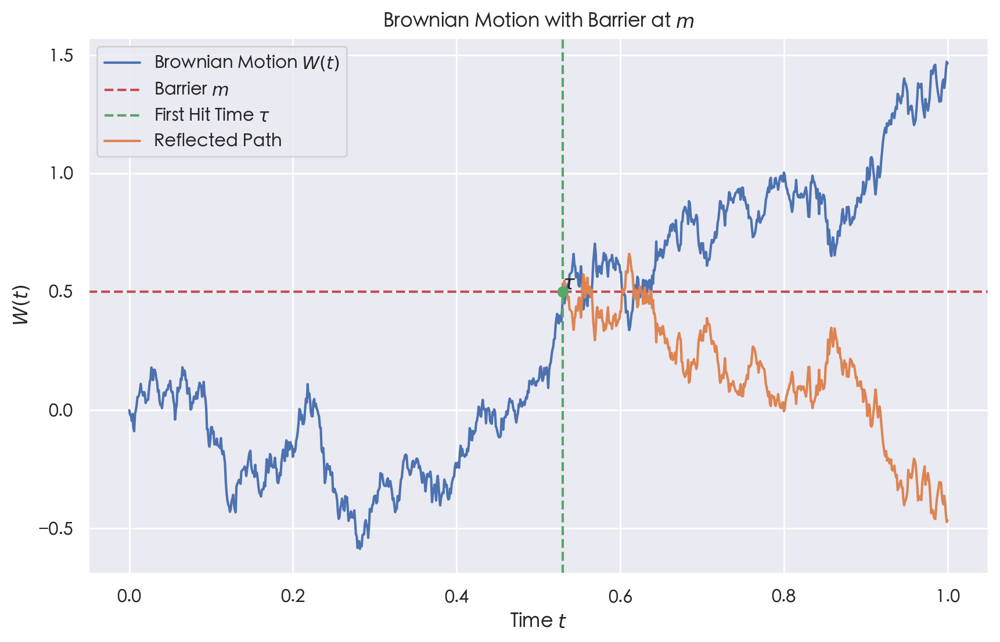
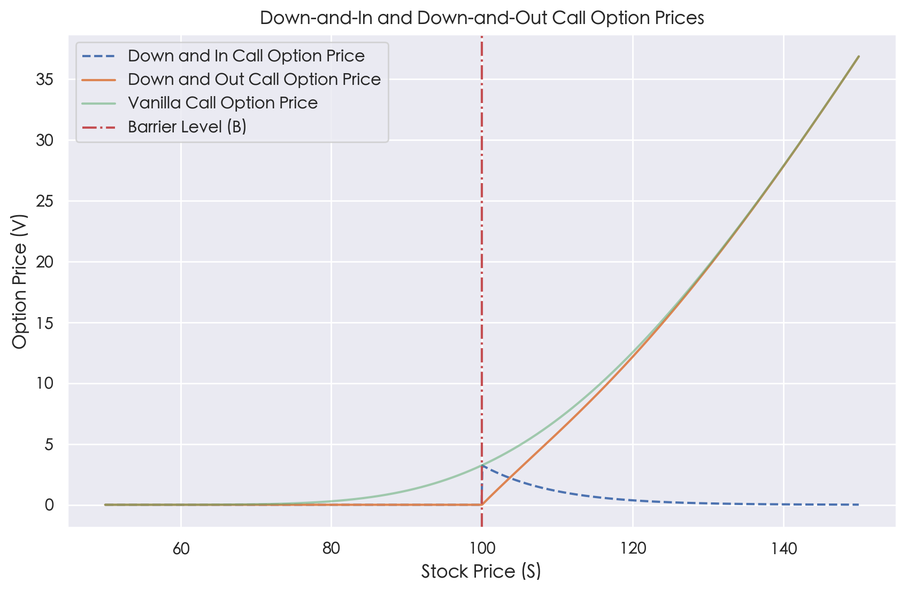
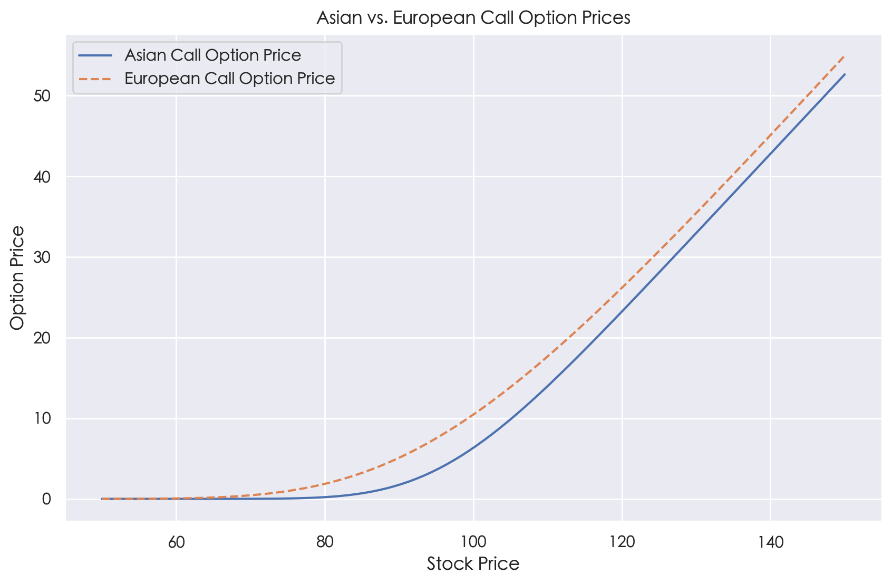

Exotic Options
Exotic options are specialized derivatives that differ from standard (“vanilla”) options by incorporating features such as non-traditional payoff structures, path-dependent pricing, or customized terms tailored to specific investor needs. Unlike vanilla options, which have standardized terms (such as fixed strike prices and expiration dates), exotic options often depend on multiple triggers, including average prices over time (Asian options), predefined price thresholds (barrier options), extrema along the price path (lookback options), or exchange rates across currencies (FX and quanto options). These instruments are primarily traded over-the-counter (OTC), offering greater flexibility in design while introducing challenges in liquidity risk and valuation complexity.
The term “exotic option” emerged in the late twentieth century and was popularized by financial economist Mark Rubinstein in his 1990 working paper Exotic Options. The name draws on both “exotic wagers” in horse racing and geographic references such as the “Asian option,” which was developed in Tokyo in 1987 by Bankers Trust executives Mark Standish and David Spaughton to price crude-oil derivatives based on average prices. During the 1980s and 1990s, rapid advances in financial engineering drove widespread adoption of exotic derivatives for hedging and structured finance, where they remain essential tools for managing currency, commodity, and volatility risks.
This chapter covers the following topics:
- Digital (Binary) Options, Pin Risk, and Call-Spread Overhedging.
- Barrier Options, the Reflection Principle, Discrete Monitoring, and Autocallable Notes.
- Asian Options, the Rogers–Shi Method, and Control Variate Pricing.
- Lookback Options.
- Foreign Exchange (FX) and Quanto Options.
06.1 Digital (Binary) Options and Call-Spread Overhedging
Before turning to path-dependent barrier contracts, we examine the simplest discontinuous European exotic: the digital (or binary) option. Digital payoffs appear both as standalone OTC contracts and as fundamental building blocks in barrier option decompositions and structured notes.
A digital (binary) option with strike $K$ and expiry $T$ pays a discontinuous amount at maturity depending on whether $S_T$ finishes above or below $K$. Its four canonical forms are:
- Cash-or-Nothing Call / Put: terminal payoffs $\ind_{\{S_T > K\}}$ and $\ind_{\{S_T < K\}}$, respectively.
- Asset-or-Nothing Call / Put: terminal payoffs $S_T\ind_{\{S_T > K\}}$ and $S_T\ind_{\{S_T < K\}}$, respectively.
Under the Black–Scholes model with time to maturity $\tau = T - t > 0$, let \[ d_1 = \frac{\log(S_t / K) + \left(r + \frac{1}{2}\sigma^2\right)\tau}{\sigma\sqrt{\tau}}, \qquad d_2 = d_1 - \sigma\sqrt{\tau}. \] Then the time-$t$ prices of Cash-or-Nothing and Asset-or-Nothing calls and puts are \[ \begin{aligned} C_{\mathrm{CoN}}(t, S_t) &= e^{-r\tau}\Phi(d_2), & P_{\mathrm{CoN}}(t, S_t) &= e^{-r\tau}\Phi(-d_2), \\ C_{\mathrm{AoN}}(t, S_t) &= S_t\Phi(d_1), & P_{\mathrm{AoN}}(t, S_t) &= S_t\Phi(-d_1). \end{aligned} \]
Under the risk-neutral measure $\Q$, $\log(S_T / S_t) = \left(r - \frac{1}{2}\sigma^2\right)\tau + \sigma\sqrt{\tau}\,Z$ with $Z \sim \mathcal{N}(0, 1)$, so $\{S_T > K\} = \{Z > -d_2\}$ and $\Q_t(S_T > K) = \Phi(d_2)$. Thus \[ C_{\mathrm{CoN}}(t, S_t) = e^{-r\tau}\E_t^{\Q}[\ind_{\{S_T > K\}}] = e^{-r\tau}\Phi(d_2), \] and $P_{\mathrm{CoN}}(t, S_t) = e^{-r\tau}\Q_t(S_T < K) = e^{-r\tau}\Phi(-d_2)$. For the Asset-or-Nothing call, changing from the money-market numeraire $B_t = e^{rt}$ to the stock numeraire $S_t$ (measure $\Q^S$) gives \[ C_{\mathrm{AoN}}(t, S_t) = e^{-r\tau}\E_t^{\Q}[S_T\ind_{\{S_T > K\}}] = S_t\Q_t^S(S_T > K) = S_t\Phi(d_1), \] and similarly $P_{\mathrm{AoN}}(t, S_t) = S_t\Phi(-d_1)$. ◻
Notice that the vanilla European call payoff decomposes identically as $(S_T - K)^+ = S_T\ind_{\{S_T > K\}} - K\ind_{\{S_T > K\}}$, recovering the Black–Scholes formula $\BS(S_t, K, \tau) = C_{\mathrm{AoN}}(t, S_t) - K\,C_{\mathrm{CoN}}(t, S_t)$.
Pin Risk and Call-Spread Overhedging
Although Theorem 06.1 is elementary, hedging a digital option near maturity poses a severe practical hazard. Differentiating $C_{\mathrm{CoN}}(t, S) = e^{-r\tau}\Phi(d_2)$ with respect to spot $S$ (using $\partial_S d_2 = (S\sigma\sqrt{\tau})^{-1}$) yields the digital Delta and Gamma:
$$ \Delta_{\mathrm{CoN}}(t, S) = \frac{\partial C_{\mathrm{CoN}}}{\partial S} = \frac{e^{-r\tau}\phi(d_2)}{S\sigma\sqrt{\tau}}, \qquad \Gamma_{\mathrm{CoN}}(t, S) = \frac{\partial^2 C_{\mathrm{CoN}}}{\partial S^2} = -\frac{e^{-r\tau}\,d_1\,\phi(d_2)}{S^2\sigma^2\tau}, $$where $\phi(z) = \frac{1}{\sqrt{2\pi}}e^{-z^2/2}$ is the standard normal density. As $\tau \downarrow 0$ with $S$ hovering near the strike $K$, we have $d_2 \to 0$ and $\phi(d_2) \to (2\pi)^{-1/2}$, so \[ \Delta_{\mathrm{CoN}}(t, K) \sim \frac{1}{K\sigma\sqrt{2\pi\tau}} \xrightarrow{\tau \downarrow 0} +\infty. \] Simultaneously, $\Gamma_{\mathrm{CoN}}(t, S)$ diverges at rate $\tau^{-1}$ and reverses sign across the strike: it explodes to $+\infty$ just below $K$ (where $d_1 < 0$) and to $-\infty$ just above $K$ (where $d_1 > 0$). This singularity is known as pin risk: if the underlying trades near $K$ immediately before expiry, a dealer maintaining a delta hedge must buy and sell arbitrarily large quantities of stock on tiny price ticks, incurring prohibitive transaction costs and gap losses.
To neutralize pin risk, trading desks rarely hedge a short Cash-or-Nothing call at its theoretical Black–Scholes price. Instead, they apply a call-spread overhedge. For a small spread width $\varepsilon > 0$, consider the static portfolio of long $1/\varepsilon$ vanilla calls struck at $K - \varepsilon$ and short $1/\varepsilon$ vanilla calls struck at $K$:
$$ \Pi_{\mathrm{CS}}(S_T) := \frac{1}{\varepsilon}\Bigl[(S_T - (K - \varepsilon))^+ - (S_T - K)^+\Bigr] = \begin{cases} 0, & S_T \le K - \varepsilon, \\ \dfrac{S_T - (K - \varepsilon)}{\varepsilon}, & K - \varepsilon < S_T < K, \\[6pt] 1, & S_T \ge K. \end{cases} $$Because $\Pi_{\mathrm{CS}}(S_T) \ge \ind_{\{S_T > K\}}$ pointwise for all $S_T > 0$, this call spread super-replicates the short digital liability. Its time-$t$ value is \[ V_{\mathrm{CS}}(t, S) = \frac{1}{\varepsilon}\Bigl[\BS(S, K - \varepsilon, \tau) - \BS(S, K, \tau)\Bigr]. \] Crucially, because each vanilla call has Delta in $[0, 1]$, the overhedged Delta satisfies \[ 0 \le \Delta_{\mathrm{CS}}(t, S) = \frac{\Delta_{\mathrm{call}}(S, K - \varepsilon, \tau) - \Delta_{\mathrm{call}}(S, K, \tau)}{\varepsilon} \le \frac{1}{\varepsilon} \] uniformly for all $\tau > 0$ and all $S > 0$, eliminating the $\tau^{-1/2}$ Delta explosion and capping the maximum hedge turnover at $1/\varepsilon$ shares. By the Mean Value Theorem and the identity $\frac{\partial \BS}{\partial K} = -e^{-r\tau}\Phi(d_2) = -C_{\mathrm{CoN}}$, we have $\lim_{\varepsilon \downarrow 0} V_{\mathrm{CS}}(t, S) = C_{\mathrm{CoN}}(t, S)$, with the positive overhedge cost $V_{\mathrm{CS}} - C_{\mathrm{CoN}} = O(\varepsilon)$ built into the dealer's offer price. (When a desk prices a digital mid-market rather than strictly super-hedging, it often uses the centered call spread $\frac{1}{2\varepsilon}[\BS(S, K - \varepsilon, \tau) - \BS(S, K + \varepsilon, \tau)]$, which reduces the approximation error to $O(\varepsilon^2)$ while still bounding Delta by $(2\varepsilon)^{-1}$.)
06.2 Barrier Options
A barrier option is a path-dependent option whose payoff depends on whether the underlying asset's price crosses (or fails to cross) a specified level during the life of the contract. It is characterized by:
- a terminal payoff $\varphi(S_T)$ at expiry $T$;
- a barrier level $B$.
A barrier option is classified as either knock-in or knock-out:
- A knock-in option is activated only if the underlying asset's price hits the barrier $B$ during $[0, T]$.
- A knock-out option is deactivated (expires worthless) if the underlying asset's price hits the barrier $B$ during $[0, T]$.
In addition, there are two barrier positions relative to the initial spot price $S_0$: a lower barrier ($B < S_0$) and an upper barrier ($B > S_0$). Combining these classifications yields four types of barrier options, summarized in Table 06.1.
| Type | Start | Trigger | Payoff (Call) |
|---|---|---|---|
| Up-and-Out | $S_0 < B$ | Knock-out if $S_t \ge B$ | $(S_T - K)\ind_F,\; F = \{B > S_T \ge K,\, \max_{0 \le t \le T} S_t < B\}$ |
| Up-and-In | $S_0 < B$ | Knock-in if $S_t \ge B$ | $(S_T - K)\ind_G,\; G = \{S_T \ge K,\, \max_{0 \le t \le T} S_t \ge B\}$ |
| Down-and-Out | $S_0 > B$ | Knock-out if $S_t \le B$ | $(S_T - K)\ind_F,\; F = \{S_T \ge K,\, \min_{0 \le t \le T} S_t > B\}$ |
| Down-and-In | $S_0 > B$ | Knock-in if $S_t \le B$ | $(S_T - K)\ind_G,\; G = \{S_T \ge K,\, \min_{0 \le t \le T} S_t \le B\}$ |
Today Sam buys an at-the-money call option with strike $100 and expiry $T = 1$ year. It is an up-and-in option with barrier $120. If the underlying price never reaches $120 before maturity, the option expires worthless; if the price touches $120 at any time in $[0, T]$, the option activates and pays $(S_T - 100)^+$ at maturity like a standard European call.
Denote by \[ c_{do}(S_0, B, K, T), \quad c_{di}(S_0, B, K, T), \quad c_{uo}(S_0, B, K, T), \quad c_{ui}(S_0, B, K, T) \] the time-$0$ prices of down-and-out, down-and-in, up-and-out, and up-and-in call options, respectively, and let $c(S_0, K, T)$ denote the price of the corresponding vanilla European call option. Consider a portfolio that is long one down-and-out call and one down-and-in call with the same barrier $B$, strike $K$, and maturity $T$. Its payoff at maturity is \[ \begin{cases} 0 + (S_T - K)^+, & \text{if the barrier is hit}, \\ (S_T - K)^+ + 0, & \text{if the barrier is never hit}, \end{cases} \] which replicates the vanilla call payoff $(S_T - K)^+$ in all states of the world.
For any barrier option with identical strike $K$, barrier $B$, and maturity $T$, a knock-out option plus a knock-in option equals the corresponding vanilla option. In particular, for calls, \[ c_{do}(S_0, B, K, T) + c_{di}(S_0, B, K, T) = c(S_0, K, T), \qquad c_{uo}(S_0, B, K, T) + c_{ui}(S_0, B, K, T) = c(S_0, K, T). \]
Let $F_0$ be the event that the barrier is never hit on $[0, T]$ and $G_0 = F_0^c$ be the complementary event that the barrier is hit. Since $\ind_{F_0} + \ind_{G_0} = 1$, risk-neutral valuation gives \[ \E^{\Q}\left[e^{-rT}\varphi(S_T)\ind_{F_0}\right] + \E^{\Q}\left[e^{-rT}\varphi(S_T)\ind_{G_0}\right] = \E^{\Q}\left[e^{-rT}\varphi(S_T)\right]. \qedhere \] ◻
By Theorem 06.2, pricing one member of each knock-in/knock-out pair immediately determines the other.
06.5.1 Down-and-In Call Options and the Reflection Principle
Pre-Pricing Down-and-In Call Options
By risk-neutral valuation, \[ c_{di}(S_0, B, K, T) = \E^{\Q}\left[e^{-rT}(S_T - K)\ind_G\right] = e^{-rT}\E^{\Q}[S_T \ind_G] - K e^{-rT}\E^{\Q}[\ind_G] := I_1 - I_2, \] where $G = \{S_T \ge K,\, \min_{0 \le t \le T} S_t \le B\}$. By the change-of-numeraire formula, \[ I_1 = B_0 \E^{\Q}\left[\frac{S_T}{B_T}\ind_G\right] = S_0 \E^{\Q^S}[\ind_G] = S_0 \Q^S(G), \] where $\Q$ is the risk-neutral measure associated with the money-market numeraire $B_t = e^{rt}$ and $\Q^S$ is the measure associated with the stock numeraire $S_t$. Likewise, \[ I_2 = K e^{-rT}\E^{\Q}[\ind_G] = K e^{-rT}\Q(G). \] Under $\Q^S$ and $\Q$, the log-price satisfies \[ \begin{aligned} \dd(\log S_t) &= \left(r + \frac{1}{2}\sigma^2\right)\dd t + \sigma \dd W_t^S, && \text{under } \Q^S, \\ \dd(\log S_t) &= \left(r - \frac{1}{2}\sigma^2\right)\dd t + \sigma \dd W_t, && \text{under } \Q, \end{aligned} \] where $W_t^S$ and $W_t$ are standard Brownian motions under $\Q^S$ and $\Q$, respectively.
In terms of log-prices, the event $G$ becomes\footnote{Since $\log$ is strictly increasing and continuous, $\min_{0 \le t \le T} S_t \le B \iff \exists\, t^* \in [0, T] \text{ s.t.\ } S_{t^*} \le B \iff \exists\, t^* \in [0, T] \text{ s.t.\ } \log S_{t^*} \le \log B \iff \min_{0 \le t \le T} \log S_t \le \log B$.}: \[ \begin{aligned} G &= \left\{\log S_T \ge \log K,\; \min_{0 \le t \le T} \log S_t \le \log B\right\} \\ &= \left\{\log\left(\frac{S_T}{S_0}\right) \ge \log\left(\frac{K}{S_0}\right),\; \min_{0 \le t \le T} \log\left(\frac{S_t}{S_0}\right) \le \log\left(\frac{B}{S_0}\right)\right\} \\ &:= \{X_T \ge x,\; m_T \le m\}, \end{aligned} \] where $X_t := \log(S_t/S_0)$, $x := \log(K/S_0)$, $m_T := \min_{0 \le t \le T} X_t$, and $m := \log(B/S_0)$. Note that for a lower barrier we have $B < S_0$, so $m < 0$, and \[ X_t = \begin{cases} \left(r - \frac{1}{2}\sigma^2\right)t + \sigma W_t, & \text{under } \Q, \\ \left(r + \frac{1}{2}\sigma^2\right)t + \sigma W_t^S, & \text{under } \Q^S, \end{cases} \qquad := \eta t + \sigma W_t^*. \] Our goal is to compute $\Q^*(X_T \ge x,\, m_T \le m)$, where $\Q^*$ is the measure under which $W_t^*$ is a standard Brownian motion. We first treat the driftless unit-volatility case $\eta = 0, \sigma = 1$ using the Reflection Principle, and then extend to general $\eta, \sigma$ via Girsanov's theorem.
Case I: $\eta = 0, \sigma = 1$ (Reflection Principle)
For a standard Brownian motion $(W_t)_{t \ge 0}$ and a level $m \in \R$, the random variable \[ \tau = \inf\{t \ge 0 : W_t = m\} \] is the first hitting time of the level $m$. The processes \[ m_t = \min_{0 \le s \le t} W_s, \qquad M_t = \max_{0 \le s \le t} W_s \] are the running minimum and running maximum of $W$ up to time $t$.
By path continuity of Brownian motion, \[ \Prob(\tau \le t) = \begin{cases} \Prob(m_t \le m), & \text{if } m < 0, \\ \Prob(M_t \ge m), & \text{if } m > 0. \end{cases} \]
For a standard Brownian motion $(W_t)_{t \ge 0}$ and the first hitting time $\tau = \inf\{t \ge 0 : W_t = m\}$, the path after time $\tau$ has the same law as the path after time $\tau$ reflected across the level $m = W_\tau$. Explicitly, the reflected process \[ \widetilde{W}_t = \begin{cases} W_t, & \text{if } t \le \tau, \\ 2m - W_t, & \text{if } t > \tau, \end{cases} \] is also a standard Brownian motion. In particular, for any $x \in \R$ and $T > 0$, \[ \Prob(W_T \ge x \mid \tau \le T) = \Prob(\widetilde{W}_T \ge x \mid \tau \le T) = \Prob(W_T \le 2m - x \mid \tau \le T). \]
Define the pre-$\tau$ process $Y_t := W_t \ind_{\{t \le \tau\}}$ and the post-$\tau$ increment process $Z_t := W_{t + \tau} - m$ for $t \ge 0$ (noting that $\tau < \infty$ almost surely for one-dimensional Brownian motion). By the Strong Markov Property of Brownian motion, $Z = (Z_t)_{t \ge 0}$ is a standard Brownian motion independent of $\F_\tau$, and in particular independent of $(\tau, Y)$. By symmetry of Brownian motion, $-Z$ is also a standard Brownian motion independent of $(\tau, Y)$, so $(Y, Z)$ and $(Y, -Z)$ have the same joint law.
Now define the measurable path-gluing map $\delta$ by \[ \delta(Y, Z)_t := Y_t \ind_{\{t \le \tau\}} + (m + Z_{t - \tau})\ind_{\{t > \tau\}}. \] Then $\delta(Y, Z)_t = W_t$ and $\delta(Y, -Z)_t = \widetilde{W}_t$ for all $t \ge 0$. Because $(Y, Z)$ and $(Y, -Z)$ share the same joint distribution, $\delta(Y, Z) = W$ and $\delta(Y, -Z) = \widetilde{W}$ have the same law; hence $\widetilde{W}$ is a standard Brownian motion. On $\{\tau \le T\}$, $\widetilde{W}_T = 2m - W_T$, which immediately gives the stated conditional probability identity. ◻
Figure 06.1 illustrates a Brownian path and its reflection after the first hitting time $\tau$.

For a standard Brownian motion $(W_t)_{t \ge 0}$:
- For every $m \ge 0$, $\Prob(M_t \ge m) = 2\Prob(W_t \ge m)$.
- For every $m \le 0$, $\Prob(m_t \le m) = 2\Prob(W_t \le m)$.
We prove the second identity; the first follows symmetrically. Decompose \[ \Prob(m_t \le m) = \Prob(m_t \le m,\, W_t \le m) + \Prob(m_t \le m,\, W_t > m). \] For the second term, using Theorem 06.3 and $\Prob(W_t = m) = 0$, \[ \begin{aligned} \Prob(m_t \le m,\, W_t > m) &= \Prob(\tau \le t,\, W_t > m) = \Prob(W_t \ge m \mid \tau \le t)\Prob(\tau \le t) \\ &= \Prob(\widetilde{W}_t \ge m \mid \tau \le t)\Prob(\tau \le t) \\ &= \Prob(2m - W_t \ge m \mid \tau \le t)\Prob(\tau \le t) \\ &= \Prob(W_t \le m \mid \tau \le t)\Prob(\tau \le t) = \Prob(W_t \le m,\, \tau \le t). \end{aligned} \] Since $\{W_t \le m\} \subset \{\tau \le t\} = \{m_t \le m\}$, both terms equal $\Prob(W_t \le m)$, yielding $\Prob(m_t \le m) = 2\Prob(W_t \le m)$. ◻
Now define the events \[ A := \{W_T \ge x,\, m_T \le m\}, \qquad B := \{W_T \le 2m - x\}, \] assuming $m \le x$ and $m \le 0$. Note that if $W_T \le 2m - x$, then $W_T \le m$ and hence $\tau \le T$. Applying Theorem 06.3 gives \[ \begin{aligned} \Prob(A) &= \Prob(W_T \ge x,\, \tau \le T) = \Prob(W_T \le 2m - x,\, \tau \le T) \\ &= \Prob(B) = \Phi\left(\frac{2m - x}{\sqrt{T}}\right). \end{aligned} \] More generally, conditionally on hitting $m$ before $T$, $W_T$ and $2m - W_T$ have the same distribution, yielding the following corollary.
For any bounded measurable function $g$:
- If $m \le x$ and $m \le 0$, with $A := \{W_T \ge x,\, m_T \le m\}$ and $B := \{W_T \le 2m - x\}$, then \[ \Prob(A) = \Prob(B) = \Phi\left(\frac{2m - x}{\sqrt{T}}\right), \qquad \E[\ind_A g(W_T)] = \E[\ind_B g(2m - W_T)]. \]
- If $M \ge x$ and $M \ge 0$, with $A' := \{W_T \le x,\, M_T \ge M\}$ and $B' := \{W_T \ge 2M - x\}$, then \[ \Prob(A') = \Prob(B') = 1 - \Phi\left(\frac{2M - x}{\sqrt{T}}\right) = \Phi\left(\frac{x - 2M}{\sqrt{T}}\right), \qquad \E[\ind_{A'} g(W_T)] = \E[\ind_{B'} g(2M - W_T)]. \]
Case II: General $\eta, \sigma$
Now consider the drifted Brownian motion \[ \dd X_t = \eta \dd t + \sigma \dd W_t, \qquad m_t = \min_{0 \le s \le t} X_s, \] with $\sigma > 0$. Writing \[ X_T = \eta T + \sigma W_T = \sigma\left(W_T + \frac{\eta}{\sigma}T\right) := \sigma \widehat{W}_T, \] we compute $\Prob(X_T \ge x,\, m_T \le m)$ in three steps:
- Define an equivalent measure $\widehat{\Prob}$ under which $\widehat{W}_t := W_t + \frac{\eta}{\sigma} t$ is a standard Brownian motion.
- Apply Corollary 06.1 under $\widehat{\Prob}$.
- Change back to $\Prob$ using the Radon–Nikodym derivative.
Define $\dd L_t = -\frac{\eta}{\sigma} L_t \dd W_t$ with $L_0 = 1$, and set \[ \frac{\dd\widehat{\Prob}}{\dd\Prob} = L_T = \exp\left(-\frac{\eta}{\sigma} W_T - \frac{\eta^2}{2\sigma^2} T\right). \] By Girsanov's theorem, $\widehat{W}_t = W_t + \frac{\eta}{\sigma} t$ is a standard Brownian motion under $\widehat{\Prob}$. Setting \[ \widehat{A} := \left\{\widehat{W}_T \ge \frac{x}{\sigma},\; \frac{m_T}{\sigma} \le \frac{m}{\sigma}\right\}, \qquad \widehat{B} := \left\{\widehat{W}_T \le \frac{2m - x}{\sigma}\right\}, \] we have $1/L_T = \exp\left(\frac{\eta}{\sigma}\widehat{W}_T - \frac{\eta^2}{2\sigma^2}T\right)$, and therefore, for $m \le x$ and $m < 0$, \[ \begin{aligned} \Prob(X_T \ge x,\, m_T \le m) &= \E^{\Prob}[\ind_{\widehat{A}}] = \E^{\widehat{\Prob}}\left[\ind_{\widehat{A}}\frac{1}{L_T}\right] \\ &= \E^{\widehat{\Prob}}\left[\ind_{\widehat{A}}\exp\left(-\frac{\eta^2}{2\sigma^2}T + \frac{\eta}{\sigma}\widehat{W}_T\right)\right] \\ &\xlongequal{\text{Cor.~\ref{cor:reflection-expectation}}} \E^{\widehat{\Prob}}\left[\ind_{\widehat{B}}\exp\left(-\frac{\eta^2}{2\sigma^2}T + \frac{\eta}{\sigma}\left(\frac{2m}{\sigma} - \widehat{W}_T\right)\right)\right] \\ &= \frac{1}{\sqrt{2\pi T}}\int_{-\infty}^{(2m - x)/\sigma} \exp\left[-\frac{\eta^2}{2\sigma^2}T + \frac{\eta}{\sigma}\left(\frac{2m}{\sigma} - z\right) - \frac{z^2}{2T}\right]\dd z \\ &= \frac{1}{\sqrt{2\pi T}}\int_{-\infty}^{(2m - x)/\sigma} \exp\left[\frac{2\eta m}{\sigma^2} - \frac{1}{2T}\left(z + \frac{\eta}{\sigma}T\right)^2\right]\dd z \\ &= \exp\left(\frac{2\eta m}{\sigma^2}\right)\Phi\left(\frac{2m - x + \eta T}{\sigma\sqrt{T}}\right). \end{aligned} \]
Let $X_t = \eta t + \sigma W_t$ ($\sigma > 0$) and $m_T = \min_{0 \le t \le T} X_t$. For $m \le x$ and $m < 0$, \[ \Prob(X_T \ge x,\, m_T \le m) = \exp\left(\frac{2\eta m}{\sigma^2}\right)\Phi\left(\frac{2m - x + \eta T}{\sigma\sqrt{T}}\right). \]
Pricing Down-and-In Call Options
Recall from the pre-pricing decomposition that $c_{di} = S_0 \Q^S(G) - K e^{-rT}\Q(G)$, where $G = \{X_T \ge x,\, m_T \le m\}$ with $x = \log(K/S_0)$, $m = \log(B/S_0)$, and $\eta = r \pm \frac{1}{2}\sigma^2$ under $\Q^S$ and $\Q$, respectively. Assuming $B < S_0$ and $B \le K$ (so that $m < 0$ and $m \le x$), Proposition 06.2 yields \[ \begin{aligned} \Q^S(G) &= \exp\left(\frac{2\left(r + \frac{1}{2}\sigma^2\right)\log\frac{B}{S_0}}{\sigma^2}\right)\Phi\left(\frac{\log\frac{B^2}{S_0 K} + \left(r + \frac{1}{2}\sigma^2\right)T}{\sigma\sqrt{T}}\right), \\ \Q(G) &= \exp\left(\frac{2\left(r - \frac{1}{2}\sigma^2\right)\log\frac{B}{S_0}}{\sigma^2}\right)\Phi\left(\frac{\log\frac{B^2}{S_0 K} + \left(r - \frac{1}{2}\sigma^2\right)T}{\sigma\sqrt{T}}\right). \end{aligned} \] Define \[ d_{\text{barrier}} := \frac{\log\left(\frac{B^2}{S_0 K}\right) + \left(r + \frac{1}{2}\sigma^2\right)T}{\sigma\sqrt{T}}, \qquad \alpha := \frac{2r}{\sigma^2} + 1. \]
Under the Black–Scholes model, for a lower barrier satisfying $B < S_0$ and $B \le K$, the time-$0$ price of a down-and-in call option is \[ c_{di}(S_0, B, K, T) = S_0\left(\frac{B}{S_0}\right)^\alpha \Phi(d_{\text{barrier}}) - K e^{-rT}\left(\frac{B}{S_0}\right)^{\alpha - 2}\Phi\left(d_{\text{barrier}} - \sigma\sqrt{T}\right). \]
Let $\BS(S_0, K, T) := S_0\Phi(d_1) - K e^{-rT}\Phi(d_2)$ denote the standard Black–Scholes European call price (for fixed $r$ and $\sigma$). Then for $B < S_0$ and $B \le K$, Theorem 06.5 and Theorem 06.2 can be written compactly as \[ \begin{aligned} c_{di}(S_0, B, K, T) &= \left(\frac{B}{S_0}\right)^{\alpha - 2}\BS\left(\frac{B^2}{S_0}, K, T\right), \\ c_{do}(S_0, B, K, T) &= \BS(S_0, K, T) - \left(\frac{B}{S_0}\right)^{\alpha - 2}\BS\left(\frac{B^2}{S_0}, K, T\right). \end{aligned} \]
A Python implementation of these barrier option formulas is provided in the companion script code/ch06_exotic_options.py, and the resulting price profiles as a function of spot $S_0$ are plotted in Figure 06.2.

06.5.2 Up-and-Out Call Options
Consider an up-and-out call option with $S_0 < B$ and $K < B$ (if $K \ge B$, the option is identically worthless since $S_T \ge K$ implies $M_T \ge B$). By change of numeraire, \[ c_{uo}(S_0, B, K, T) = S_0 \Q^S(F) - K e^{-rT}\Q(F), \] where $F = \{M > M_T \ge X_T > x\}$, with \[ X_t = \log\left(\frac{S_t}{S_0}\right), \qquad x = \log\left(\frac{K}{S_0}\right), \qquad M_T = \max_{0 \le t \le T} X_t, \qquad M = \log\left(\frac{B}{S_0}\right) > 0, \] and $X_t = \eta t + \sigma W_t$, where $\eta = r - \frac{1}{2}\sigma^2$ under $\Q$ and $\eta = r + \frac{1}{2}\sigma^2$ under $\Q^S$.
Introducing the same Girsanov measure change \[ \frac{\dd\widehat{\Prob}}{\dd\Prob} = L_T = \exp\left(-\frac{\eta}{\sigma}W_T - \frac{\eta^2}{2\sigma^2}T\right), \] the process $\widehat{W}_t = W_t + \frac{\eta}{\sigma} t = X_t/\sigma$ is a standard Brownian motion under $\widehat{\Prob}$. Setting $\widehat{M} := M/\sigma$ and $\widehat{M}_T := \max_{0 \le t \le T} \widehat{W}_t = M_T/\sigma$, we have \[ \widehat{\Prob}(F) = \widehat{\Prob}\left(\widehat{M} > \widehat{M}_T \ge \widehat{W}_T > \frac{x}{\sigma}\right). \] To evaluate $\Prob(F)$, we first derive the joint density of $(W_t, M_t)$ for a standard Brownian motion.
For a standard Brownian motion $(W_t)_{t \ge 0}$ and $M_t = \max_{0 \le s \le t} W_s \ge 0$, the joint probability density function of $(W_t, M_t)$ is \[ f_{W_t, M_t}(w, m) = \frac{2(2m - w)}{t\sqrt{2\pi t}}\exp\left(-\frac{(2m - w)^2}{2t}\right)\ind_{\{w \le m,\, m \ge 0\}}. \]
For $w \le m$ and $m \ge 0$, Corollary 06.1 gives \[ \Prob(W_t \le w,\, M_t \ge m) = \Prob(W_t \ge 2m - w) = 1 - \Phi\left(\frac{2m - w}{\sqrt{t}}\right) = \Phi\left(\frac{w - 2m}{\sqrt{t}}\right). \] In integral form, \[ \int_m^\infty \int_{-\infty}^w f_{W_t, M_t}(x, y)\dd x\dd y = \frac{1}{\sqrt{2\pi t}}\int_{2m - w}^\infty \exp\left(-\frac{z^2}{2t}\right)\dd z. \] Differentiating both sides with respect to $m$ (applying the chain rule to the lower limit $2m - w$, which contributes a factor of $2$) gives \[ -\int_{-\infty}^w f_{W_t, M_t}(x, m)\dd x = -\frac{2}{\sqrt{2\pi t}}\exp\left(-\frac{(2m - w)^2}{2t}\right). \] Canceling the minus signs and differentiating with respect to $w$ yields \[ f_{W_t, M_t}(w, m) = \frac{2(2m - w)}{t\sqrt{2\pi t}}\exp\left(-\frac{(2m - w)^2}{2t}\right), \qquad w \le m,\; m \ge 0. \qedhere \] ◻
Applying Lemma 06.1 under $\widehat{\Prob}$ and changing back to $\Prob$ gives \[ \begin{aligned} \Prob\left(\widehat{W}_T \le w,\, \widehat{M}_T \le m\right) &= \E^{\widehat{\Prob}}\left[\frac{1}{L_T}\ind_{\{\widehat{W}_T \le w,\, \widehat{M}_T \le m\}}\right] \\ &= \int_{-\infty}^w \int_{-\infty}^m f^{\widehat{\Prob}}_{\widehat{W}_T, \widehat{M}_T}(x, y)\exp\left(\frac{\eta}{\sigma}x - \frac{\eta^2}{2\sigma^2}T\right)\dd y\dd x, \end{aligned} \] so the joint density of $(\widehat{W}_T, \widehat{M}_T)$ under $\Prob$ is \[ f^{\Prob}_{\widehat{W}_T, \widehat{M}_T}(w, m) = \frac{2(2m - w)}{T\sqrt{2\pi T}}\exp\left(\frac{\eta}{\sigma}w - \frac{\eta^2}{2\sigma^2}T - \frac{(2m - w)^2}{2T}\right)\ind_{\{w \le m,\, m \ge 0\}}. \] Integrating over $F = \{x/\sigma < \widehat{W}_T \le \widehat{M}_T < M/\sigma\}$ under $\Q^S$ (with $\eta = r + \frac{1}{2}\sigma^2$) yields \[ \begin{aligned} \Q^S(F) &= \int_{x/\sigma}^{M/\sigma}\int_w^{M/\sigma} \frac{2(2m - w)}{T\sqrt{2\pi T}}\exp\left(\frac{\eta}{\sigma}w - \frac{\eta^2}{2\sigma^2}T - \frac{(2m - w)^2}{2T}\right)\dd m\dd w \\ &= -\int_{x/\sigma}^{M/\sigma} \frac{1}{\sqrt{2\pi T}}\left.\exp\left(\frac{\eta}{\sigma}w - \frac{\eta^2}{2\sigma^2}T - \frac{(2m - w)^2}{2T}\right)\right|_{m=w}^{m=M/\sigma}\dd w \\ &= \frac{1}{\sqrt{2\pi T}}\int_{x/\sigma}^{M/\sigma} \exp\left(\frac{\eta}{\sigma}w - \frac{\eta^2}{2\sigma^2}T - \frac{w^2}{2T}\right)\dd w \\ &\quad - \frac{1}{\sqrt{2\pi T}}\int_{x/\sigma}^{M/\sigma} \exp\left(\frac{\eta}{\sigma}w - \frac{\eta^2}{2\sigma^2}T - \frac{(2M/\sigma - w)^2}{2T}\right)\dd w \\ &:= I_1 - I_2. \end{aligned} \] Completing the square in $I_1$ gives \[ \begin{aligned} I_1 &= \frac{1}{\sqrt{2\pi T}}\int_{x/\sigma}^{M/\sigma} \exp\left(-\frac{1}{2T}\left(w - \frac{\eta}{\sigma}T\right)^2\right)\dd w \\ &= \Phi\left(\frac{M - \eta T}{\sigma\sqrt{T}}\right) - \Phi\left(\frac{x - \eta T}{\sigma\sqrt{T}}\right) \\ &= \Phi\left(\frac{\log(S_0/K) + \left(r + \frac{1}{2}\sigma^2\right)T}{\sigma\sqrt{T}}\right) - \Phi\left(\frac{\log(S_0/B) + \left(r + \frac{1}{2}\sigma^2\right)T}{\sigma\sqrt{T}}\right), \end{aligned} \] and completing the square in $I_2$ gives \[ \begin{aligned} I_2 &= \exp\left(\frac{2M\eta}{\sigma^2}\right)\frac{1}{\sqrt{2\pi T}}\int_{x/\sigma}^{M/\sigma} \exp\left(-\frac{1}{2T}\left(w - \frac{\eta}{\sigma}T - \frac{2M}{\sigma}\right)^2\right)\dd w \\ &= \exp\left(\frac{2M\eta}{\sigma^2}\right)\left[\Phi\left(\frac{-M - \eta T}{\sigma\sqrt{T}}\right) - \Phi\left(\frac{x - \eta T - 2M}{\sigma\sqrt{T}}\right)\right] \\ &= \exp\left(\frac{2M\eta}{\sigma^2}\right)\left[\Phi\left(\frac{\log\left(\frac{B^2}{K S_0}\right) + \left(r + \frac{1}{2}\sigma^2\right)T}{\sigma\sqrt{T}}\right) - \Phi\left(\frac{\log\left(\frac{B}{S_0}\right) + \left(r + \frac{1}{2}\sigma^2\right)T}{\sigma\sqrt{T}}\right)\right]. \end{aligned} \] The expression for $\Q(F)$ is identical with $\eta = r - \frac{1}{2}\sigma^2$. Define \[ \begin{aligned} d_1^K &:= \frac{\log(S_0/K) + \left(r + \frac{1}{2}\sigma^2\right)T}{\sigma\sqrt{T}}, & d_1^B &:= \frac{\log(S_0/B) + \left(r + \frac{1}{2}\sigma^2\right)T}{\sigma\sqrt{T}}, \\ d_{\text{barrier}}^K &:= \frac{\log\left(\frac{B^2}{K S_0}\right) + \left(r + \frac{1}{2}\sigma^2\right)T}{\sigma\sqrt{T}}, & d_{\text{barrier}}^B &:= \frac{\log\left(\frac{B}{S_0}\right) + \left(r + \frac{1}{2}\sigma^2\right)T}{\sigma\sqrt{T}}, \end{aligned} \] and recall $\alpha = \frac{2r}{\sigma^2} + 1$. Substituting $\Q^S(F)$ and $\Q(F)$ into $c_{uo} = S_0 \Q^S(F) - K e^{-rT}\Q(F)$ gives \[ \begin{aligned} c_{uo} &= \textcolor{red}{S_0\Phi(d_1^K)} - S_0\Phi(d_1^B) - \textcolor{blue}{S_0\left(\frac{B}{S_0}\right)^\alpha \Phi(d_{\text{barrier}}^K)} + S_0\left(\frac{B}{S_0}\right)^\alpha \Phi(d_{\text{barrier}}^B) \\ &\quad \textcolor{red}{- K e^{-rT}\Phi(d_1^K - \sigma\sqrt{T})} + K e^{-rT}\Phi(d_1^B - \sigma\sqrt{T}) \\ &\quad \textcolor{blue}{+ K e^{-rT}\left(\frac{B}{S_0}\right)^{\alpha - 2}\Phi(d_{\text{barrier}}^K - \sigma\sqrt{T})} - K e^{-rT}\left(\frac{B}{S_0}\right)^{\alpha - 2}\Phi(d_{\text{barrier}}^B - \sigma\sqrt{T}). \end{aligned} \] Note that $-\BS(S_0, B, T) = -S_0\Phi(d_1^B) + B e^{-rT}\Phi(d_1^B - \sigma\sqrt{T})$, which exceeds $-S_0\Phi(d_1^B) + K e^{-rT}\Phi(d_1^B - \sigma\sqrt{T})$ by $(B - K)e^{-rT}\Phi(d_1^B - \sigma\sqrt{T})$, and similarly for the reflected term with $d_{\text{barrier}}^B$. Adjusting by this digital knock-out difference gives the exact closed-form price.
Under the Black–Scholes model, for an upper barrier satisfying $S_0 < B$ and $K < B$, the time-$0$ price of an up-and-out call option is \[ \begin{aligned} c_{uo}(S_0, B, K, T) &= \BS(S_0, K, T) - \left(\frac{B}{S_0}\right)^{\alpha - 2}\BS\left(\frac{B^2}{S_0}, K, T\right) \\ &\quad - \left[\BS(S_0, B, T) - \left(\frac{B}{S_0}\right)^{\alpha - 2}\BS\left(\frac{B^2}{S_0}, B, T\right)\right] \\ &\quad - (B - K)e^{-rT}\left[\Phi\left(d_1^B - \sigma\sqrt{T}\right) - \left(\frac{B}{S_0}\right)^{\alpha - 2}\Phi\left(d_{\text{barrier}}^B - \sigma\sqrt{T}\right)\right]. \end{aligned} \]
Consider an up-and-out call option with $S_0 = 100$, $K = 100$, $B = 120$, $r = 5\%$, $\sigma = 20\%$, and $T = 1$. We compute $\alpha = \frac{2r}{\sigma^2} + 1 = 3.5$, so $\alpha - 2 = 1.5$, the reflection factor is \[ \left(\frac{B}{S_0}\right)^{\alpha - 2} = 1.2^{1.5} \approx 1.314534, \] and the reflected spot level is $B^2/S_0 = 144$. Evaluating the four Black–Scholes call components yields \[ \begin{aligned} \BS(100, 100, 1) &\approx 10.4506, & \BS(144, 100, 1) &\approx 49.0394, \\ \BS(100, 120, 1) &\approx 3.2475, & \BS(144, 120, 1) &\approx 31.4029. \end{aligned} \] Hence the first two bracketed terms in Theorem 06.6 evaluate to \[ \begin{aligned} \BS(100, 100, 1) - 1.2^{1.5}\BS(144, 100, 1) &\approx 10.4506 - 64.4640 = -54.0134, \\ -\Bigl[\BS(100, 120, 1) - 1.2^{1.5}\BS(144, 120, 1)\Bigr] &\approx -(3.2475 - 41.2801) = +38.0326. \end{aligned} \] Notice that summing only these vanilla call terms produces $-54.0134 + 38.0326 = -15.9807 < 0$, which would be an impossible negative option price! The missing piece is the digital knock-out correction term, which accounts for the payoff truncation $(B - K) = 20$ at the barrier. Computing \[ \begin{aligned} d_1^B - \sigma\sqrt{T} &= \frac{\log(100/120) + (0.05 - 0.02)}{0.20} \approx -0.7616, & \Phi(-0.7616) &\approx 0.223147, \\ d_{\text{barrier}}^B - \sigma\sqrt{T} &= \frac{\log(120/100) + (0.05 - 0.02)}{0.20} \approx 1.0616, & \Phi(1.0616) &\approx 0.855793, \end{aligned} \] the digital knock-out correction term is \[ -(120 - 100)e^{-0.05}\Bigl[0.223147 - 1.314534 \times 0.855793\Bigr] \approx +17.1568. \] Adding all three contributions yields the exact up-and-out call price, and Theorem 06.2 immediately gives the companion up-and-in call price: \[ c_{uo} \approx -15.9807 + 17.1568 = 1.1761, \qquad c_{ui} = \BS(100, 100, 1) - c_{uo} \approx 10.4506 - 1.1761 = 9.2745. \] Because an at-the-money call with $20\%$ volatility is very likely to touch $B = 120$ during a one-year horizon, nearly $89\%$ of the vanilla call's value resides in the up-and-in component.
06.5.3 PDE Framework for Barrier Options
Before the barrier $B$ is hit, the price $V(t, S)$ of any barrier option satisfies the standard Black–Scholes PDE: \[ \frac{\partial V}{\partial t} + \frac{1}{2}\sigma^2 S^2 \frac{\partial^2 V}{\partial S^2} + r S \frac{\partial V}{\partial S} - r V = 0. \] The four barrier types differ in their spatial domains, terminal conditions, and boundary conditions at the barrier $B$, as summarized in Table 06.2. In particular, if a knock-out call reaches expiry $T$ without hitting $B$, it pays $V(T, S) = (S - K)^+$; if a knock-in call reaches expiry $T$ without having hit $B$, it expires unactivated with $V(T, S) = 0$, whereas upon hitting $B$ at any $t < T$ it turns into a vanilla call with value $V(t, B) = V_{\text{vanilla}}(t, B)$.
| Down-and-Out | Down-and-In | Up-and-Out | Up-and-In | |
|---|---|---|---|---|
| Domain | $[0, T] \times (B, \infty)$ | $[0, T] \times (B, \infty)$ | $[0, T] \times (0, B)$ | $[0, T] \times (0, B)$ |
| Expiry ($t = T$) | $(S - K)^+$ | $0$ | $(S - K)^+$ | $0$ |
| Barrier ($S = B$) | $V(t, B) = 0$ | $V(t, B) = V_{\text{vanilla}}(t, B)$ | $V(t, B) = 0$ | $V(t, B) = V_{\text{vanilla}}(t, B)$ |
| Far-Field | $V \sim S - K e^{-r(T-t)}$ | $\lim_{S \to \infty} V(t, S) = 0$ | $V(t, 0) = 0$ | $\lim_{S \to 0^+} V(t, S) = 0$ |
Let $V_{do}(t, S_t; B, \varphi)$ denote the time-$t$ price of a down-and-out option (still alive at time $t$) with terminal payoff $\varphi(S_T)$ and lower barrier $B$. Then for any constants $\alpha, \beta \in \R$, \[ V_{do}(t, S_t; B, \alpha\varphi + \beta\psi) = \alpha V_{do}(t, S_t; B, \varphi) + \beta V_{do}(t, S_t; B, \psi). \]
Let $F = \{\min_{t \le u \le T} S_u > B\}$. By linearity of conditional expectation, \[ \E_t^{\Q}\left[e^{-r(T-t)}\bigl(\alpha\varphi(S_T) + \beta\psi(S_T)\bigr)\ind_F\right] = \alpha\E_t^{\Q}\left[e^{-r(T-t)}\varphi(S_T)\ind_F\right] + \beta\E_t^{\Q}\left[e^{-r(T-t)}\psi(S_T)\ind_F\right]. \qedhere \] ◻
For down-and-out options with barrier $B$, strike $K$, and maturity $T$, \[ p_{do}(S, B, K, T) = K \cdot b_{do}(S, B, T) - s_{do}(S, B, T) + c_{do}(S, B, K, T), \] where $p_{do}$ is the down-and-out put price, $b_{do}(S, B, T)$ is the price of a down-and-out digital bond paying $1$ at maturity, and $s_{do}(S, B, T)$ is the price of a down-and-out asset-or-nothing contract paying $S_T$ at maturity.
Apply Lemma 06.2 to the payoff identity $(K - S_T)^+ = K \cdot 1 - S_T + (S_T - K)^+$. ◻
06.5.4 Discrete Barrier Monitoring and Continuity Correction
The analytical formulas in Theorems 06.5 and 06.6 assume that the barrier $B$ is monitored continuously at every instant $t \in [0, T]$. In practice, almost all exchange-traded and OTC barrier contracts are monitored at discrete fixing dates $0 < t_1 < t_2 < \cdots < t_M = T$ (for example, daily market closes with $\Delta t = T / M$).
Because the discrete running extremum over $M$ dates is strictly less extreme than the continuous extremum, \[ \max_{1 \le j \le M} S_{t_j} \le \max_{0 \le t \le T} S_t, \qquad \min_{1 \le j \le M} S_{t_j} \ge \min_{0 \le t \le T} S_t, \] a discretely monitored barrier is strictly less likely to be breached than a continuously monitored barrier at the same nominal level $B$. Consequently, a discretely monitored knock-out option is strictly more valuable than its continuous counterpart, while a discretely monitored knock-in option is strictly less valuable. Because a Brownian path that touches $B$ between fixing dates can recede by $O(\sigma\sqrt{\Delta t})$ before the next observation, the pricing gap between discrete and continuous monitoring decays slowly at rate $O(\sqrt{\Delta t})$ rather than $O(\Delta t)$, producing substantial discrepancies even under daily monitoring.
Let $V_{\mathrm{disc}}(S_0, B, K, T; M)$ denote the price of a barrier option monitored at $M$ equally spaced dates with step size $\Delta t = T / M$, and let $V_{\mathrm{cont}}(S_0, B, K, T)$ denote the corresponding continuously monitored Black–Scholes price. Shifting the nominal barrier $B$ away from $S_0$ to
$$ B_{\mathrm{adj}} = B \exp\bigl(\pm \beta \sigma \sqrt{\Delta t}\bigr), \qquad \beta := -\frac{\zeta(1/2)}{\sqrt{2\pi}} \approx 0.5826, $$where $\zeta(\cdot)$ is the Riemann zeta function, with the $+$ sign for an up-barrier ($B > S_0$) and the $-$ sign for a down-barrier ($B < S_0$), yields the asymptotic approximation \[ V_{\mathrm{disc}}(S_0, B, K, T; M) = V_{\mathrm{cont}}(S_0, B_{\mathrm{adj}}, K, T) + o(\sqrt{\Delta t}) \] as $M \to \infty$ (and in fact $O(\Delta t)$ accuracy when $S_0$ is bounded away from $B$).
Reference. See M. Broadie, P. Glasserman, and S. G. Kou (1997), A Continuity Correction for Discrete Barrier Options, Mathematical Finance 7(4), 325–349.
Economically, the constant $\beta \approx 0.5826$ captures the expected overshoot of a Gaussian random walk past a flat boundary (via Siegmund's renewal-theoretic identity). Shifting an upper barrier upward to $B_{\mathrm{adj}} > B$ (or a lower barrier downward to $B_{\mathrm{adj}} < B$) enlarges the survival corridor so that a continuous Brownian path breaches $B_{\mathrm{adj}}$ with approximately the same probability as a discrete path breaches $B$.
To appreciate the magnitude of the $O(\sqrt{\Delta t})$ effect, revisit the up-and-out call of Example 06.2 ($S_0 = K = 100$, $B = 120$, $r = 5\%$, $\sigma = 20\%$, $T = 1$), whose continuous price is $c_{uo} = 1.1761$. Under daily monitoring ($M = 252$, $\Delta t = 1/252$), equation 06.3 shifts the effective barrier to $B_{\mathrm{adj}} = 120\exp(0.5826 \times 0.20 / \sqrt{252}) \approx 120.8840$, raising the up-and-out price to $c_{uo}^{\mathrm{disc}} \approx 1.3321$ (an increase of more than $13\%$). Under weekly monitoring ($M = 52$), $B_{\mathrm{adj}} \approx 121.9548$ and $c_{uo}^{\mathrm{disc}} \approx 1.5328$; under monthly monitoring ($M = 12$), $B_{\mathrm{adj}} \approx 124.1050$ and $c_{uo}^{\mathrm{disc}} \approx 1.9706$.
06.5.5 Autocallables and Snowball Structured Notes
Discrete barrier mechanics lie at the heart of one of the largest segments of the modern equity-derivatives market: autocallable structured notes, widely known in Asia-Pacific markets as snowball notes. A snowball note combines a discretely monitored upper knock-out (autocall) barrier with a lower knock-in barrier, offering investors an enhanced annualized coupon in exchange for selling downside tail protection.
Consider a snowball note with notional $N$, initial reference price $S_0$, discrete observation dates $0 < t_1 < t_2 < \cdots < t_M = T$, upper knock-out barrier $B_{\mathrm{KO}} \ge S_0$, lower knock-in barrier $B_{\mathrm{KI}} < S_0$, and annualized coupon rate $c > 0$. Define the knock-out stopping time and the knock-in event by \[ \tau_{\mathrm{KO}} := \inf\bigl\{t_j : S_{t_j} \ge B_{\mathrm{KO}}\bigr\} \quad (\inf\emptyset := \infty), \qquad E_{\mathrm{KI}} := \left\{\min_{1 \le j \le M} S_{t_j} \le B_{\mathrm{KI}}\right\}. \] (In many live contracts, $B_{\mathrm{KI}}$ is observed daily while $B_{\mathrm{KO}}$ is observed monthly or quarterly; both conventions share the same event structure.) Every price path falls into exactly one of three mutually exclusive and exhaustive regimes:
- Early Knock-Out ($\tau_{\mathrm{KO}} \le T$): As soon as the underlying closes at or above $B_{\mathrm{KO}}$ on an observation date $t_j$, the note terminates early and returns principal plus accrued coupon $N(1 + c\,\tau_{\mathrm{KO}})$ at time $\tau_{\mathrm{KO}}$.
- Full-Term Survival without Knock-In ($\tau_{\mathrm{KO}} = \infty$ and $E_{\mathrm{KI}}^c$): Neither barrier is breached over $[0, T]$; at maturity $T$, the investor receives principal plus the full coupon $N(1 + c\,T)$.
- Knock-In without Knock-Out ($\tau_{\mathrm{KO}} = \infty$ and $E_{\mathrm{KI}}$): The underlying breaches $B_{\mathrm{KI}}$ and never subsequently knocks out. The investor forfeits all coupons and bears downside exposure equivalent to a short at-the-money put, receiving $N\min(S_T / S_0, 1) = N - N(1 - S_T / S_0)^+$ at maturity $T$.
Collecting these three disjoint events, the time-$0$ risk-neutral value of the snowball note admits the exact pathwise decomposition
$$ V_{\mathrm{SB}} = \E^{\Q}\!\left[e^{-r\tau_{\mathrm{KO}}} N(1 + c\,\tau_{\mathrm{KO}})\ind_{\{\tau_{\mathrm{KO}} \le T\}} + e^{-rT} N(1 + c\,T)\ind_{\{\tau_{\mathrm{KO}} = \infty\} \cap E_{\mathrm{KI}}^c} + e^{-rT} N\min\!\left(\frac{S_T}{S_0}, 1\right)\ind_{\{\tau_{\mathrm{KO}} = \infty\} \cap E_{\mathrm{KI}}}\right]. $$From the investor's perspective, a snowball is structurally equivalent to holding a high-coupon autocallable bond funded by selling a down-and-in put with barrier $B_{\mathrm{KI}}$ and strike $S_0$ (knocked out if $B_{\mathrm{KO}}$ is hit first).
Barrier Hedging Risk
Pricing equation 06.4 is straightforward via Monte Carlo or finite-difference PDE grids, yet dynamically hedging a large book of issued snowballs creates acute barrier hedging risk near both $B_{\mathrm{KI}}$ and $B_{\mathrm{KO}}$:
- Near the Knock-In Barrier $B_{\mathrm{KI}}$: Because breaching $B_{\mathrm{KI}}$ causes the investor's payoff to drop discontinuously from $N(1 + c\,T)$ to $N\min(S_T / S_0, 1)$, the note value $V_{\mathrm{SB}}(t, S)$ exhibits an upward digital-like step across $B_{\mathrm{KI}}$. Consequently, its Delta $\frac{\partial V_{\mathrm{SB}}}{\partial S}$ spikes sharply near $B_{\mathrm{KI}}$ and its Gamma $\frac{\partial^2 V_{\mathrm{SB}}}{\partial S^2}$ changes sign across the barrier (negative just above $B_{\mathrm{KI}}$, positive just below $B_{\mathrm{KI}}$). A dealer who has sold the snowball holds a delta hedge of $+\frac{\partial V_{\mathrm{SB}}}{\partial S}$ units of the underlying. While $S > B_{\mathrm{KI}}$, the dealer has positive Gamma ($-\frac{\partial^2 V_{\mathrm{SB}}}{\partial S^2} > 0$) and buys on dips; once $S$ falls below $B_{\mathrm{KI}}$ (or knocks in), the dealer's Gamma turns sharply negative ($-\frac{\partial^2 V_{\mathrm{SB}}}{\partial S^2} < 0$), forcing the dealer to sell underlying shares or index futures into a falling market to unwind the excess hedge. This feedback loop can amplify market sell-offs when large retail snowball books cluster around common knock-in levels.
- Near the Knock-Out Barrier $B_{\mathrm{KO}}$: Approaching an observation date $t_j$ with $S \approx B_{\mathrm{KO}}$, the discontinuity between early termination at $N(1 + c\,t_j)$ and continued survival (with residual downside knock-in risk) generates digital pin risk analogous to 06.1. In practice, dealers mitigate both singularities by applying barrier-shift overhedges (analogous to the call-spread overhedge 06.2) and reserving for discrete gap risk.
Consider a one-year snowball note with notional $N = 100$, initial level $S_0 = 100$, upper knock-out barrier $B_{\mathrm{KO}} = 103$, lower knock-in barrier $B_{\mathrm{KI}} = 80$, annualized coupon $c = 12\%$ p.a., and four quarterly observation dates $t_1 = 0.25$, $t_2 = 0.50$, $t_3 = 0.75$, $t_4 = 1.00$ (both barriers monitored quarterly for simplicity). Table 06.3 illustrates four representative price paths spanning every payoff regime in 06.4.
| Path Scenario | $S_{t_1}$ | $S_{t_2}$ | $S_{t_3}$ | $S_{t_4}$ | Trigger Event | Payoff |
|---|---|---|---|---|---|---|
| 1. Q2 Knock-Out | $98$ | $105$ | — | — | $\tau_{\mathrm{KO}} = 0.50$ ($S_{t_2} \ge 103$) | $100(1 + 0.12 \times 0.50) = 106$ |
| 2. Full-Term Survival | $96$ | $91$ | $99$ | $101$ | No KO, no KI ($80 < S_{t_j} < 103$) | $100(1 + 0.12 \times 1.00) = 112$ |
| 3. KI with Recovery | $88$ | $76$ | $92$ | $102$ | KI at $t_2$ ($76 \le 80$), no KO, $S_T \ge S_0$ | $100\min(102/100,\, 1) = 100$ |
| 4. KI Ending Below $S_0$ | $90$ | $78$ | $75$ | $72$ | KI at $t_2$ ($78 \le 80$), no KO, $S_T < S_0$ | $100 \times (72/100) = 72$ |
Note the asymmetry between Paths 2 and 3: although Path 3 finishes at $S_{t_4} = 102$ (higher than Path 2's terminal level of $101$), its prior dip to $76 \le B_{\mathrm{KI}}$ forfeits the entire $12\%$ coupon, leaving the investor with only principal ($100$). In Path 4, the knock-in exposes the investor to the full $28\%$ drawdown from $S_0 = 100$ to $S_T = 72$.
06.3 Asian Options
Asian options were first introduced in 1987 by the Bankers Trust Tokyo office, which gave them their name. Originally used for crude oil and other commodities, Asian options average the underlying price over time, reducing sensitivity to short-term price shocks and end-of-period price manipulation while making the contract cheaper than a comparable vanilla European option.
An Asian option is a path-dependent option whose payoff depends on the average price of the underlying asset over a specified averaging window.
Asian options are categorized along three dimensions:
- Geometric vs. Arithmetic average;
- Continuous vs. Discrete sampling;
- Fixed strike vs. Floating strike.
The corresponding average $A_T$ is given by \[ A_T = \begin{cases} \displaystyle \frac{1}{n}\sum_{i=1}^n S_{t_i}, & \text{discretely sampled arithmetic average}, \\[8pt] \displaystyle \left(\prod_{i=1}^n S_{t_i}\right)^{1/n}, & \text{discretely sampled geometric average}, \\[8pt] \displaystyle \frac{1}{T}\int_0^T S_t \dd t, & \text{continuously sampled arithmetic average}, \\[8pt] \displaystyle \exp\left(\frac{1}{T}\int_0^T \log S_t \dd t\right), & \text{continuously sampled geometric average}. \end{cases} \] For an Asian call option, the payoff function takes one of two forms:
- Fixed strike: $V_T = (A_T - K)^+$.
- Floating strike: $V_T = (S_T - k A_T)^+$, where $k > 0$ is a constant (typically $k = 1$).
In what follows, we consider continuously sampled Asian options. While geometric Asian options admit a closed-form Black–Scholes-type formula, arithmetic Asian options do not have an elementary closed-form solution in the Black–Scholes model.
06.5.6 Geometric Asian Options
Define the continuously sampled geometric average up to time $t > 0$ by \[ G_t = \exp\left(\frac{1}{t}\int_0^t \log S_u \dd u\right) := e^{X_t}, \qquad X_t := \frac{1}{t}\int_0^t \log S_u \dd u. \] The terminal payoff of a fixed-strike geometric Asian call option is \[ V_T = \left(e^{X_T} - K\right)^+, \] and its time-$t$ price is \[ c_{ga}(t, S_t, G_t) = \E^{\Q}\left[e^{-r(T-t)}\left(e^{X_T} - K\right)^+ \;\middle|\; \F_t\right]. \] Splitting the integral at time $t$, \[ \begin{aligned} X_T &= \underbrace{\frac{1}{T}\int_0^t \log S_u \dd u}_{\text{known at time } t} + \underbrace{\frac{1}{T}\int_t^T \log S_u \dd u}_{\text{random after time } t} \\ &= \frac{t}{T} X_t + \frac{1}{T}\int_t^T \left[\log S_t + \left(r - \frac{1}{2}\sigma^2\right)(u - t) + \sigma(W_u - W_t)\right]\dd u \\ &= \frac{t}{T} X_t + \frac{T - t}{T}\log S_t + \frac{1}{T}\left(r - \frac{1}{2}\sigma^2\right)\frac{(T - t)^2}{2} + \frac{\sigma}{T}\int_t^T (W_u - W_t)\dd u. \end{aligned} \]
For a standard Brownian motion $(W_u)_{u \ge 0}$, the integral $\int_t^T (W_u - W_t)\dd u$ is normally distributed with mean $0$ and variance $\frac{(T - t)^3}{3}$, and is independent of $\F_t$.
Consider a uniform partition $t = t_0 < t_1 < \cdots < t_n = T$. Summation by parts on the Riemann sum gives \[ \begin{aligned} \sum_{i=0}^{n-1}(W_{t_i} - W_t)(t_{i+1} - t_i) &= \sum_{i=1}^{n-1} W_{t_{i-1}} t_i + W_{t_{n-1}} t_n - \sum_{i=1}^{n-1} W_{t_i} t_i - W_{t_0} t_0 - W_t(T - t) \\ &= \sum_{i=1}^{n-1}(W_{t_{i-1}} - W_{t_i})t_i + T(W_{t_{n-1}} - W_t) \\ &= \sum_{i=1}^{n-1}(T - t_i)\Delta W_i, \qquad \Delta W_i := W_{t_i} - W_{t_{i-1}}. \end{aligned} \] Since $u \mapsto W_u - W_t$ is continuous and $\E[(W_u - W_v)^2] = |u - v|$, these Riemann sums converge in $L^2$ to $\int_t^T (W_u - W_t)\dd u$. Each sum is a linear combination of independent mean-zero Gaussian increments $\Delta W_i$ independent of $\F_t$, so the $L^2$-limit is Gaussian with mean $0$ and independent of $\F_t$. By $L^2$-convergence (or equivalently Fubini's theorem), its variance is \[ \begin{aligned} \E\left[\left(\int_t^T (W_u - W_t)\dd u\right)^2\right] &= \lim_{n \to \infty}\E\left[\left(\sum_{i=1}^{n-1}(T - t_i)\Delta W_i\right)^2\right] \\ &= \lim_{n \to \infty}\sum_{i=1}^{n-1}(T - t_i)^2 (t_i - t_{i-1}) = \int_t^T (T - u)^2 \dd u = \frac{(T - t)^3}{3}. \qedhere \end{aligned} \] ◻
Defining \[ \overline{\mu} := \frac{1}{T}\left(r - \frac{1}{2}\sigma^2\right)\frac{(T - t)^2}{2}, \qquad \overline{\sigma} := \frac{\sigma}{T}\sqrt{\frac{(T - t)^3}{3}}, \] we may write $X_T = \frac{t}{T}X_t + \frac{T - t}{T}\log S_t + \overline{\mu} + \overline{\sigma} Z$ with $Z \sim \mathcal{N}(0, 1)$ independent of $\F_t$, so that \[ G_T = e^{X_T} = G_t^{t/T} S_t^{(T-t)/T} e^{\overline{\mu} + \overline{\sigma} Z}. \]
Under the Black–Scholes model, the time-$t$ price ($0 \le t < T$) of a continuously sampled fixed-strike geometric Asian call option is \[ c_{ga}(t, S_t, G_t) = e^{-r(T-t)}\left[G_t^{t/T} S_t^{(T-t)/T}\exp\left(\overline{\mu} + \frac{1}{2}\overline{\sigma}^2\right)\Phi(d_1) - K\Phi(d_2)\right], \] where \[ \begin{gathered} d_2 = \frac{1}{\overline{\sigma}}\left(\frac{t}{T}\log G_t + \frac{T - t}{T}\log S_t - \log K + \overline{\mu}\right), \qquad d_1 = d_2 + \overline{\sigma}, \\ \overline{\mu} = \frac{1}{T}\left(r - \frac{1}{2}\sigma^2\right)\frac{(T - t)^2}{2}, \qquad \overline{\sigma} = \frac{\sigma}{T}\sqrt{\frac{(T - t)^3}{3}}. \end{gathered} \]
The payoff is strictly positive if and only if \[ G_t^{t/T} S_t^{(T-t)/T} e^{\overline{\mu} + \overline{\sigma} Z} > K \iff Z > \frac{1}{\overline{\sigma}}\left(\log K - \frac{t}{T}\log G_t - \frac{T - t}{T}\log S_t - \overline{\mu}\right) = -d_2. \] Since $G_t$ and $S_t$ are $\F_t$-measurable and $Z \sim \mathcal{N}(0, 1)$ is independent of $\F_t$, \[ \begin{aligned} \E_t^{\Q}\left[\left(G_t^{t/T} S_t^{(T-t)/T} e^{\overline{\mu} + \overline{\sigma} Z} - K\right)^+\right] &= G_t^{t/T} S_t^{(T-t)/T}\frac{1}{\sqrt{2\pi}}\int_{-d_2}^{\infty} \exp\left(\overline{\mu} + \overline{\sigma} z - \frac{z^2}{2}\right)\dd z - K\Phi(d_2) \\ &= G_t^{t/T} S_t^{(T-t)/T} e^{\overline{\mu} + \frac{1}{2}\overline{\sigma}^2}\frac{1}{\sqrt{2\pi}}\int_{-d_2}^{\infty} \exp\left(-\frac{(z - \overline{\sigma})^2}{2}\right)\dd z - K\Phi(d_2) \\ &= G_t^{t/T} S_t^{(T-t)/T} e^{\overline{\mu} + \frac{1}{2}\overline{\sigma}^2}\Phi(d_1) - K\Phi(d_2). \end{aligned} \] Multiplying by $e^{-r(T-t)}$ completes the proof. ◻
At any time $t \in [0, T)$, the running geometric average $G_t$ is $\F_t$-measurable (determined entirely by the already observed price history on $[0, t]$). Thus Theorem 06.8 provides an exact closed-form price at every $t \in [0, T)$ without requiring Monte Carlo simulation. Numerical implementations and Monte Carlo cross-checks are provided in code/ch06_exotic_options.py, and Figure 06.3 compares the geometric Asian call price with the vanilla European call price.

Because averaging reduces volatility, Asian options are strictly cheaper than their vanilla European counterparts.
06.5.7 PDE Framework for Path-Dependent Options
For a general path-dependent option whose terminal payoff $V_T = \varphi(S_T, I_T)$ depends on an integral state variable \[ I_t = \int_0^t f(S_u, u)\dd u, \qquad \dd I_t = f(S_t, t)\dd t, \] let $V(t, S_t, I_t)$ denote the option price at time $t$. Because $I_t$ has finite variation, $(\dd I_t)^2 = 0$ and $\dd S_t \dd I_t = 0$. Applying multi-dimensional It\^{o}'s lemma to $V(t, S_t, I_t)$ yields \[ \dd V_t = \left(\frac{\partial V}{\partial t} + \frac{1}{2}\sigma^2 S_t^2 \frac{\partial^2 V}{\partial S^2}\right)\dd t + \frac{\partial V}{\partial S}\dd S_t + \textcolor{blue}{\frac{\partial V}{\partial I}\dd I_t}. \] Forming the self-financing portfolio $\Pi_t = V(t, S_t, I_t) + \kappa S_t + \beta B_t$ with zero initial cost ($\beta B_t = -V - \kappa S_t$) and choosing the delta-hedge $\kappa = -\frac{\partial V}{\partial S}$ gives \[ \begin{aligned} \dd\Pi_t &= \left(\frac{\partial V}{\partial t} + \frac{1}{2}\sigma^2 S_t^2 \frac{\partial^2 V}{\partial S^2}\right)\dd t + \frac{\partial V}{\partial I}\dd I_t + \beta r B_t \dd t \\ &= \left(\frac{\partial V}{\partial t} + r S_t \frac{\partial V}{\partial S} + \frac{1}{2}\sigma^2 S_t^2 \frac{\partial^2 V}{\partial S^2} + \textcolor{blue}{f(S_t, t)\frac{\partial V}{\partial I}} - r V\right)\dd t. \end{aligned} \] Setting $\dd\Pi_t = 0$ by no-arbitrage yields the path-dependent Black–Scholes PDE: \[ \frac{\partial V}{\partial t} + r S \frac{\partial V}{\partial S} + \frac{1}{2}\sigma^2 S^2 \frac{\partial^2 V}{\partial S^2} + f(S, t)\frac{\partial V}{\partial I} - r V = 0. \]
06.5.8 Rogers–Shi Method
For an arithmetic Asian call option, set $I_t = \int_0^t S_u \dd u$, so $f(S, t) = S$ and $A_t = \frac{1}{t}I_t$. Factoring out $S_t$, \[ \begin{aligned} \E_t^{\Q}[(A_T - K)^+] &= \E_t^{\Q}\left[\left(\frac{1}{T}\int_t^T S_u \dd u - \left(K - \frac{I_t}{T}\right)\right)^+\right] \\ &= S_t \E_t^{\Q}\left[\left(\frac{1}{T}\int_t^T \frac{S_u}{S_t}\dd u - X_t\right)^+\right], \end{aligned} \] where $X_t := \frac{K - I_t/T}{S_t}$.
For $u > t$, the ratio $\frac{S_u}{S_t} = \exp\!\left(\left(r - \frac{1}{2}\sigma^2\right)(u - t) + \sigma(W_u - W_t)\right)$ is independent of $\F_t$. Hence $\E_t^{\Q}\!\left[\left(\frac{1}{T}\int_t^T \frac{S_u}{S_t}\dd u - X_t\right)^+\right]$ depends only on $(t, X_t)$.
Define $H(X_t, t) := e^{-r(T-t)}\E_t^{\Q}\!\left[\left(\frac{1}{T}\int_t^T \frac{S_u}{S_t}\dd u - X_t\right)^+\right]$, so that $V(t, S_t, I_t) = S_t H(X_t, t)$. Since \[ \frac{\partial X}{\partial S} = -\frac{X}{S}, \qquad \frac{\partial X}{\partial I} = -\frac{1}{T S}, \] the chain rule yields \[ \frac{\partial V}{\partial S} = H - X\frac{\partial H}{\partial X}, \qquad \frac{\partial^2 V}{\partial S^2} = \frac{X^2}{S}\frac{\partial^2 H}{\partial X^2}, \qquad \frac{\partial V}{\partial I} = -\frac{1}{T}\frac{\partial H}{\partial X}. \] Substituting into the path-dependent PDE reduces the dimension from two spatial variables $(S, I)$ to one: \[ \frac{\partial H}{\partial t} - \left(\frac{1}{T} + r X\right)\frac{\partial H}{\partial X} + \frac{1}{2}\sigma^2 X^2 \frac{\partial^2 H}{\partial X^2} = 0, \qquad X \in (-\infty, \infty),\; t \in [0, T), \] with terminal condition \[ V(T, S_T, I_T) = \left(\frac{I_T}{T} - K\right)^+ = S_T(-X_T)^+ \iff H(X_T, T) = (-X_T)^+. \]
When $X_t \le 0$ (that is, $\frac{I_t}{T} \ge K$, or equivalently $\frac{t}{T} A_t \ge K$), the option is already guaranteed to finish in the money, since $\frac{1}{T}\int_t^T \frac{S_u}{S_t}\dd u - X_t \ge 0$ almost surely. In this region we obtain an explicit formula: \[ \begin{aligned} H(X_t, t) &= e^{-r(T-t)}\E_t^{\Q}\left[\frac{1}{T}\int_t^T \frac{S_u}{S_t}\dd u - X_t\right] \\ &= e^{-r(T-t)}\frac{1}{T}\int_t^T \frac{\E_t^{\Q}[S_u]}{S_t}\dd u - e^{-r(T-t)}X_t \\ &= e^{-r(T-t)}\frac{1}{T}\int_t^T e^{r(u - t)}\dd u - e^{-r(T-t)}X_t \\ &= \frac{1 - e^{-r(T-t)}}{r T} - e^{-r(T-t)}X_t, \end{aligned} \] and therefore \[ V(t, S_t, I_t) = S_t H(X_t, t) = S_t\frac{1 - e^{-r(T-t)}}{r T} + e^{-r(T-t)}\left(\frac{I_t}{T} - K\right). \]
Now consider a portfolio that is long one arithmetic Asian call and short one arithmetic Asian put with the same strike $K$ and maturity $T$. Its terminal payoff is \[ c(T, S_T, I_T) - p(T, S_T, I_T) = \left(\frac{I_T}{T} - K\right)^+ - \left(K - \frac{I_T}{T}\right)^+ = \frac{I_T}{T} - K. \] Taking the discounted risk-neutral expectation reproduces the calculation above, establishing put–call parity.
For continuously sampled fixed-strike arithmetic Asian options, \[ c(t, S_t, I_t) - p(t, S_t, I_t) = S_t\frac{1 - e^{-r(T-t)}}{r T} + e^{-r(T-t)}\left(\frac{I_t}{T} - K\right). \]
In addition to dimension reduction, Rogers and Shi (1995) derived a remarkably tight lower bound for the arithmetic Asian call price by conditioning on a zero-mean Gaussian proxy $Z := \frac{1}{T}\int_0^T W_t \dd t \sim \mathcal{N}(0, T/3)$ that is strongly correlated with $A_T$. By Jensen's inequality applied to the convex function $x \mapsto x^+$,
$$ V_{\mathrm{arith}} = e^{-rT}\E^{\Q}\bigl[(A_T - K)^+\bigr] = e^{-rT}\E^{\Q}\Bigl[\E^{\Q}\bigl[(A_T - K)^+ \mid Z\bigr]\Bigr] \ge e^{-rT}\E^{\Q}\Bigl[\bigl(\E^{\Q}[A_T - K \mid Z]\bigr)^+\Bigr] =: V_{\mathrm{RS\text{-}LB}}. $$Since $\log S_t$ and $Z$ are jointly Gaussian for every $t \in [0, T]$, the conditional expectation $\E^{\Q}[S_t \mid Z]$ is available in closed form, so $V_{\mathrm{RS\text{-}LB}}$ reduces to a smooth one-dimensional integral over the standard normal density and typically lies within a few basis points of the exact price $V_{\mathrm{arith}}$.
06.5.9 Control Variates for Arithmetic Asian Options
When high-precision numerical valuation of an arithmetic Asian option is required (especially for discretely monitored contracts or multi-asset extensions), Monte Carlo simulation (Appendix B) is the standard method. However, crude Monte Carlo converges slowly at rate $O(N^{-1/2})$. A celebrated remedy due to Kemna and Vorst (1990) exploits the closed-form geometric Asian price from Theorem 06.8 as a control variate.
Simulate $N$ independent risk-neutral asset paths under $\Q$, and on each path $i = 1, \ldots, N$ evaluate both the discounted arithmetic Asian call payoff $Y_i := e^{-rT}(A_T^{(i)} - K)^+$ and the discounted geometric Asian call payoff $X_i := e^{-rT}(G_T^{(i)} - K)^+$. Denote the corresponding sample means by \[ \hat{V}_{\mathrm{arith}} := \frac{1}{N}\sum_{i=1}^N Y_i, \qquad \hat{V}_{\mathrm{geo}} := \frac{1}{N}\sum_{i=1}^N X_i. \] Because the exact expectation $V_{\mathrm{geo}}^{\mathrm{exact}} = \E^{\Q}[X_i]$ is known analytically from Theorem 06.8, the Kemna–Vorst control variate estimator
$$ \hat{V}_{\mathrm{arith}}^{\mathrm{CV}}(\beta) := \hat{V}_{\mathrm{arith}} - \beta\bigl(\hat{V}_{\mathrm{geo}} - V_{\mathrm{geo}}^{\mathrm{exact}}\bigr) $$is unbiased for every deterministic constant $\beta \in \R$: \[ \E^{\Q}\bigl[\hat{V}_{\mathrm{arith}}^{\mathrm{CV}}(\beta)\bigr] = \E^{\Q}[\hat{V}_{\mathrm{arith}}] - \beta\bigl(\E^{\Q}[\hat{V}_{\mathrm{geo}}] - V_{\mathrm{geo}}^{\mathrm{exact}}\bigr) = V_{\mathrm{arith}}. \] Its variance is a convex quadratic in $\beta$: \[ \Var\bigl(\hat{V}_{\mathrm{arith}}^{\mathrm{CV}}(\beta)\bigr) = \frac{1}{N}\Bigl(\Var(Y) - 2\beta\Cov(Y, X) + \beta^2\Var(X)\Bigr), \] which is minimized at \[ \beta^* = \frac{\Cov(Y, X)}{\Var(X)}, \] yielding the optimal variance reduction identity
$$ \Var\bigl(\hat{V}_{\mathrm{arith}}^{\mathrm{CV}}(\beta^*)\bigr) = \bigl(1 - \rho_{YX}^2\bigr)\Var(\hat{V}_{\mathrm{arith}}), \qquad \rho_{YX} := \frac{\Cov(Y, X)}{\sqrt{\Var(Y)\Var(X)}}. $$In practice, $\beta^*$ is estimated from the sample covariance and sample variance (or on a small pilot batch to preserve exact unbiasedness), and even the naive choice $\beta = 1$ captures nearly the entire variance reduction. Because the arithmetic and geometric averages track each other pathwise with correlation $\rho_{YX} > 0.999$ for typical volatilities, equation 06.7 reduces Monte Carlo variance by two to three orders of magnitude ($(1 - \rho_{YX}^2)^{-1} \sim 10^3$), turning a noisy $N = 10^5$ simulation into a four-decimal-place pricing engine.
Consider continuously sampled fixed-strike Asian call options and a comparable vanilla European call with $S_0 = 100$, $K = 100$, $r = 5\%$, $\sigma = 20\%$, and $T = 1$.
- Geometric Asian Call: Applying Theorem 06.8 at $t = 0$ gives \[ \overline{\mu} = \frac{1}{2}\left(0.05 - \frac{1}{2}(0.20)^2\right)(1) = 0.015, \qquad \overline{\sigma} = \frac{0.20}{\sqrt{3}} \approx 0.115470. \] Hence \[ d_2 = \frac{\log(100/100) + 0.015}{0.115470} \approx 0.129904, \qquad d_1 = d_2 + \overline{\sigma} \approx 0.245374, \] and the exact continuous geometric Asian call price is \[ V_{\mathrm{geo}} = e^{-0.05}\left[100\exp\!\left(0.015 + \frac{1}{2}(0.115470)^2\right)\Phi(0.245374) - 100\Phi(0.129904)\right] \approx 5.5468. \]
- AM–GM Ordering and Rogers–Shi Bound: By the arithmetic–geometric mean inequality, $G_T \le A_T$ holds almost surely on every path, so $V_{\mathrm{geo}} \le V_{\mathrm{arith}}$. Meanwhile, volatility reduction from time-averaging ensures $V_{\mathrm{arith}} \le V_{\mathrm{vanilla}} = \BS(100, 100, 1) \approx 10.4506$. Evaluating the Rogers–Shi conditioning lower bound 06.5 via one-dimensional quadrature yields $V_{\mathrm{RS\text{-}LB}} \approx 5.7627$.
- Kemna–Vorst Control Variate Benchmark: A fine-grid Monte Carlo simulation ($N = 10^5$ paths, $500$ trapezoidal steps) using the Kemna–Vorst estimator 06.6 achieves sample correlation $\rho_{YX} \approx 0.9996$ (an approximately $1300\times$ variance reduction over crude Monte Carlo) and produces $V_{\mathrm{arith}} \approx 5.7638$ (standard error $0.0007$). Thus \[ V_{\mathrm{geo}} = 5.5468 \;\le\; V_{\mathrm{RS\text{-}LB}} = 5.7627 \;\le\; V_{\mathrm{arith}} \approx 5.7638 \;\le\; V_{\mathrm{vanilla}} = 10.4506. \] Notably, the Asian call costs only about $55\%$ of the vanilla call, and the Rogers–Shi lower bound lies within $0.0011$ (less than $0.02\%$) of the exact continuous arithmetic Asian price.
06.4 Lookback Options
A lookback option is a path-dependent option whose payoff depends on the running maximum or running minimum of the underlying asset price over a lookback period $[0, T]$: \[ m_T := \min_{0 \le t \le T} S_t, \qquad M_T := \max_{0 \le t \le T} S_t. \]
Lookback options eliminate market-timing regret by allowing the holder to buy at the lowest price or sell at the highest price realized over $[0, T]$, at the cost of a substantially higher premium than vanilla options.
Unlike integral path-dependent options, the running maximum $M_t = \max_{0 \le u \le t} S_u$ cannot be written in the form $\int_0^t f(S_u, u)\dd u$. To connect $M_t$ to the integral PDE framework, we approximate $M_t$ using $L^n$ norms.
Let $f$ be a continuous positive function on $[a, b]$. Then \[ \max_{a \le x \le b} f(x) = \lim_{n \to \infty}\left(\int_a^b f(x)^n \dd x\right)^{1/n}. \]
Let $m = \min_{a \le x \le b} f(x) > 0$ and $M = \max_{a \le x \le b} f(x)$, and set $I_n := \int_a^b f(x)^n \dd x$. Since $f(x) \le M$ on $[a, b]$, we have $I_n^{1/n} \le M(b - a)^{1/n}$, so $\limsup_{n \to \infty} I_n^{1/n} \le M$.
Conversely, let $x_0 \in [a, b]$ satisfy $f(x_0) = M$. By continuity, for any $\varepsilon \in (0, M)$ there exists an interval $U \subset [a, b]$ of positive length $|U| > 0$ containing $x_0$ such that $f(x) > M - \varepsilon$ for all $x \in U$. Thus \[ I_n \ge \int_U f(x)^n \dd x > |U|(M - \varepsilon)^n \implies I_n^{1/n} > (M - \varepsilon)|U|^{1/n}. \] Letting $n \to \infty$ gives $\liminf_{n \to \infty} I_n^{1/n} \ge M - \varepsilon$. Since $\varepsilon > 0$ is arbitrary, $\liminf_{n \to \infty} I_n^{1/n} \ge M$, and hence $\lim_{n \to \infty} I_n^{1/n} = M$. ◻
For any $t > 0$, \[ M_t = \max_{0 \le u \le t} S_u = \lim_{n \to \infty}\left(\int_0^t S_u^n \dd u\right)^{1/n}, \qquad m_t = \min_{0 \le u \le t} S_u = \lim_{n \to \infty}\left(\int_0^t S_u^{-n} \dd u\right)^{-1/n}. \]
For each integer $n \ge 1$, define $I_{n, t} := \int_0^t S_u^n \dd u$ and $M_{n, t} := I_{n, t}^{1/n}$, so that $M_t = \lim_{n \to \infty} M_{n, t}$. Differentiating gives \[ \dd I_{n, t} = S_t^n \dd t, \qquad \dd M_{n, t} = \frac{1}{n} I_{n, t}^{(1-n)/n}\dd I_{n, t} = \frac{1}{n}\frac{S_t^n}{M_{n, t}^{n-1}}\dd t. \] Applying It\^{o}'s lemma to $V(t, S_t, M_{n, t})$ and replicating via $\Pi_t = V(t, S_t, M_{n, t}) + \kappa S_t + \beta B_t$ yields the approximating PDE \[ \frac{\partial V}{\partial t} + r S \frac{\partial V}{\partial S} + \frac{1}{2}\sigma^2 S^2 \frac{\partial^2 V}{\partial S^2} + \frac{1}{n}\frac{S^n}{M_n^{n-1}}\frac{\partial V}{\partial M_n} - r V = 0. \] Whenever $S_t < M_t$, we have $M_{n, t} \to M_t > S_t$, so for all sufficiently large $n$, $M_{n, t} > S_t$ and \[ 0 \le \frac{1}{n}\frac{S_t^n}{M_{n, t}^{n-1}} < \frac{S_t}{n} \xrightarrow{n \to \infty} 0. \] In the limit $n \to \infty$, the $\frac{\partial V}{\partial M}$ term vanishes on the interior domain $\{0 < S < M\}$ (consistent with the fact that $M_t$ is locally constant whenever $S_t < M_t$), leaving the standard Black–Scholes PDE.
At the diagonal boundary $S = M$, applying It\^{o}'s formula to the discounted price $e^{-rt}V(t, S_t, M_t)$ produces the singular finite-variation term $e^{-rt}\frac{\partial V}{\partial M}(t, M_t, M_t)\dd M_t$, supported on $\{S_t = M_t\}$. Because $M_t$ is strictly increasing on $\{S_t = M_t\}$ (a Brownian motion starting at its running maximum immediately attains new maxima almost surely), the discounted price can be a $\Q$-martingale only if the coefficient of $\dd M_t$ vanishes identically along $S = M$, yielding the Neumann boundary condition $\frac{\partial V}{\partial M}(t, M, M) = 0$.
Consequently, the price $V(t, S, M)$ of a European floating-strike lookback put option (with payoff $M_T - S_T$) satisfies \[ \frac{\partial V}{\partial t} + r S \frac{\partial V}{\partial S} + \frac{1}{2}\sigma^2 S^2 \frac{\partial^2 V}{\partial S^2} - r V = 0, \qquad (t, S, M) \in [0, T) \times \{(S, M) : 0 < S < M\}, \] subject to the terminal and boundary conditions \[ \begin{aligned} V(T, S, M) &= M - S, \\ V(t, 0, M) &= e^{-r(T-t)} M, \\ \frac{\partial V}{\partial M}(t, M, M) &= 0. \end{aligned} \]
06.5 Foreign Exchange (FX) and Quanto Options
Foreign exchange (FX) options grant the holder the right, but not the obligation, to exchange a specified amount of one currency for another at a predetermined exchange rate (the strike $K$) on or before expiry $T$.
An exchange rate is the price of one currency in terms of another: \[ \text{Exchange Rate}_{A/B} = \frac{\text{Units of Currency } B}{\text{One Unit of Currency } A}. \]
Exchange rates are quoted in two conventions:
- Direct quotation: the amount of domestic currency required to buy one unit of foreign currency.
- Indirect quotation: the amount of foreign currency obtained per unit of domestic currency.
Let $Y_t$ be the SGD–CNY exchange rate at time $t$, i.e., the CNY value of 1 SGD (for instance, $Y_t \approx 5.40$ means $1\text{ SGD} = 5.40\text{ CNY}$). This is a direct quotation for a CNY-based investor and an indirect quotation for an SGD-based investor.
Domestic Risk-Neutral Measure
Under the domestic risk-neutral measure $\Q$, let $X_t$ be the direct quotation—the domestic currency value of one unit of foreign currency. Because holding foreign currency earns the foreign risk-free rate $r_f$ (analogous to a continuous dividend yield on a stock), the no-arbitrage dynamics of $X_t$ under $\Q$ are \[ \dd X_t = (r - r_f) X_t \dd t + \sigma X_t \dd W_t, \] where $r$ is the domestic risk-free rate, $r_f$ is the foreign risk-free rate, and $\sigma$ is the FX volatility.
Applying the Black–Scholes formula for a dividend-paying asset yields the Garman–Kohlhagen formula for a European FX call option with strike $K$: \[ c(X_t, K, T) = X_t e^{-r_f(T-t)}\Phi(d_1) - K e^{-r(T-t)}\Phi(d_2), \] where \[ d_1 = \frac{\ln(X_t/K) + \left(r - r_f + \frac{1}{2}\sigma^2\right)(T - t)}{\sigma\sqrt{T - t}}, \qquad d_2 = d_1 - \sigma\sqrt{T - t}. \]
Foreign Risk-Neutral Measure
A call payoff $(X_T - K)^+$ is denominated in domestic currency (say, SGD). For example, if the CNY–SGD exchange rate rises from $0.20$ to $0.30$ (meaning the Singapore dollar weakens) and the strike is $K = 0.25$, the payoff is $(0.30 - 0.25)^+ = 0.05\text{ SGD}$.
To a foreign (CNY-based) investor, this domestic payoff is worth \[ \frac{(X_T - K)^+}{X_T} \] in foreign currency, so its time-$t$ value in foreign currency under the foreign risk-neutral measure $\Q^f$ is \[ c_f(X_t, K, T) = e^{-r_f(T-t)}\E_t^{\Q^f}\left[\frac{(X_T - K)^+}{X_T}\right]. \] Define the inverse exchange rate $Y_t := 1/X_t$ (the SGD–CNY rate). By It\^{o}'s lemma applied to $Y_t = X_t^{-1}$, \[ \dd Y_t = -\frac{1}{X_t^2}\dd X_t + \frac{1}{X_t^3}(\dd X_t)^2 = \left(r_f - r + \sigma^2\right)Y_t \dd t - \sigma Y_t \dd W_t. \] Under $\Q^f$, the drift of $Y_t$ must be $r_f - r$ (corresponding to the Girsanov shift $\dd W_t^f = -\dd W_t + \sigma \dd t$, where $W_t^f$ is a $\Q^f$-Brownian motion), giving \[ \dd Y_t = (r_f - r)Y_t \dd t + \sigma Y_t \dd W_t^f, \] so $\sigma_Y = \sigma$. Rewriting the payoff in terms of $Y_T = 1/X_T$, \[ c_f(X_t, K, T) = e^{-r_f(T-t)}\E_t^{\Q^f}\left[\frac{(X_T - K)^+}{X_T}\right] = K e^{-r_f(T-t)}\E_t^{\Q^f}\left[\left(\frac{1}{K} - Y_T\right)^+\right]. \] Economically, an option to buy $1\text{ CNY}$ at strike $K\text{ SGD}$ is equivalent to $K$ options to sell $1\text{ SGD}$ at strike $1/K\text{ CNY}$.
Applying the Garman–Kohlhagen put formula to $Y_t$ with strike $1/K$ under $\Q^f$ (where the foreign rate $r_f$ plays the role of the domestic rate and $r$ plays the role of the yield) yields \[ \frac{1}{K} c_f(X_t, K, T) = \frac{1}{K} e^{-r_f(T-t)}\Phi(-d_2^f) - Y_t e^{-r(T-t)}\Phi(-d_1^f), \] where \[ d_1^f = \frac{\ln\left(\frac{Y_t}{1/K}\right) + \left(r_f - r + \frac{1}{2}\sigma^2\right)(T - t)}{\sigma\sqrt{T - t}} = \frac{\ln(K Y_t) + \left(r_f - r + \frac{1}{2}\sigma^2\right)(T - t)}{\sigma\sqrt{T - t}}, \qquad d_2^f = d_1^f - \sigma\sqrt{T - t}. \]
Let $c_f(X_t)$ and $c(X_t)$ denote the prices of the same FX option in foreign and domestic currency, respectively. Then \[ c_f(X_t)\cdot X_t = c(X_t). \]
Since $Y_t = 1/X_t$, we have $\ln(K Y_t) = -\ln(X_t/K)$, and therefore \[ -d_1^f = \frac{\ln(X_t/K) + \left(r - r_f - \frac{1}{2}\sigma^2\right)(T - t)}{\sigma\sqrt{T - t}} = d_2, \qquad -d_2^f = -d_1^f + \sigma\sqrt{T - t} = d_1. \] Multiplying $c_f(X_t)$ by $X_t$ and using $X_t Y_t = 1$ gives \[ c_f(X_t)\cdot X_t = X_t e^{-r_f(T-t)}\Phi(-d_2^f) - K e^{-r(T-t)}\Phi(-d_1^f) = X_t e^{-r_f(T-t)}\Phi(d_1) - K e^{-r(T-t)}\Phi(d_2) = c(X_t). \qedhere \] ◻
Quanto Derivatives
A quanto derivative is a contract whose underlying asset is denominated in a foreign currency, but whose payoff is settled in the domestic currency at a predetermined fixed exchange rate $X_{\text{fixed}}$, eliminating direct FX conversion risk at maturity. We summarize the market variables under the physical measure:
- $B_t^d$: domestic money-market account, $\dd B_t^d = r_d B_t^d \dd t$.
- $S_t^f$: foreign asset price in foreign currency, $\dd S_t^f = \mu_S S_t^f \dd t + \sigma_S S_t^f \dd W_t^S$.
- $X_t$: FX rate (domestic currency per unit of foreign currency), $\dd X_t = \mu_X X_t \dd t + \sigma_X X_t \dd W_t^X$, with $\langle \dd W_t^S, \dd W_t^X \rangle = \rho \dd t$.
- $\overline{S}_t := S_t^f X_t$: domestic currency value of the foreign asset. By It\^{o}'s product rule, \[ \dd\overline{S}_t = S_t^f \dd X_t + X_t \dd S_t^f + \dd X_t \dd S_t^f = (\mu_S + \mu_X + \rho\sigma_S\sigma_X)\overline{S}_t \dd t + \sigma_S\overline{S}_t \dd W_t^S + \sigma_X\overline{S}_t \dd W_t^X. \]
- $B_t^f$: foreign money-market account, $\dd B_t^f = r_f B_t^f \dd t$.
- $\overline{B}_t := B_t^f X_t$: domestic currency value of the foreign money-market account, \[ \dd\overline{B}_t = B_t^f \dd X_t + X_t \dd B_t^f = (r_f + \mu_X)\overline{B}_t \dd t + \sigma_X\overline{B}_t \dd W_t^X. \]
- $V(t, S_t^f)$: domestic currency price of the quanto derivative (which does not depend on $X_t$).
For instance, a Singaporean (domestic) investor holding a quanto call on a Chinese stock settles the payoff in SGD at a fixed conversion rate, while hedging requires translating positions in the foreign stock and foreign money-market account into SGD.
Form a self-financing zero-cost portfolio in the domestic accounting currency: \[ \Pi_t = V_t + \Delta_t^S \overline{S}_t + \Delta_t^X \overline{B}_t + \beta_t B_t^d = 0 \implies \beta_t B_t^d = -V_t - \Delta_t^S \overline{S}_t - \Delta_t^X \overline{B}_t. \] By It\^{o}'s lemma and self-financing, \[ \begin{aligned} \dd\Pi_t &= \frac{\partial V}{\partial t}\dd t + \frac{\partial V}{\partial S^f}\dd S_t^f + \frac{1}{2}\sigma_S^2 (S_t^f)^2 \frac{\partial^2 V}{\partial (S^f)^2}\dd t \\ &\quad + \Delta_t^S\left(S_t^f \dd X_t + X_t \dd S_t^f + \dd X_t \dd S_t^f\right) + \Delta_t^X\left(B_t^f \dd X_t + X_t \dd B_t^f\right) + \beta_t r_d B_t^d \dd t. \end{aligned} \] To hedge out both stock risk ($\dd S_t^f$) and FX risk ($\dd X_t$), choose \[ \Delta_t^S = -\frac{1}{X_t}\frac{\partial V}{\partial S^f}, \qquad \Delta_t^X = -\frac{\Delta_t^S S_t^f}{B_t^f} = \frac{S_t^f}{X_t B_t^f}\frac{\partial V}{\partial S^f}. \] With this hedge, $\Delta_t^S \overline{S}_t + \Delta_t^X \overline{B}_t = 0$, so the zero-cost condition simplifies to $\beta_t B_t^d = -V_t$. Using $\dd X_t \dd S_t^f = \rho\sigma_S\sigma_X \overline{S}_t \dd t$, \[ \begin{aligned} \dd\Pi_t &= \left[\frac{\partial V}{\partial t} + \frac{1}{2}\sigma_S^2 (S_t^f)^2 \frac{\partial^2 V}{\partial (S^f)^2} + \Delta_t^S \rho\sigma_S\sigma_X \overline{S}_t + \Delta_t^X r_f \overline{B}_t + \beta_t r_d B_t^d\right]\dd t \\ &= \left[\frac{\partial V}{\partial t} + \frac{1}{2}\sigma_S^2 (S_t^f)^2 \frac{\partial^2 V}{\partial (S^f)^2} + (r_f - \rho\sigma_S\sigma_X)S_t^f \frac{\partial V}{\partial S^f} - r_d V_t\right]\dd t. \end{aligned} \] Setting $\dd\Pi_t = 0$ yields the quanto PDE: \[ \frac{\partial V}{\partial t} + \frac{1}{2}\sigma_S^2 (S^f)^2 \frac{\partial^2 V}{\partial (S^f)^2} + (r_f - \rho\sigma_S\sigma_X)S^f \frac{\partial V}{\partial S^f} - r_d V = 0. \]
By the Feynman–Kac theorem, the domestic-currency price of the quanto derivative is \[ V(t, S_t^f) = e^{-r_d(T-t)}\E_t^{\Q^d}\left[V(T, S_T^f)\right], \] where, under the domestic risk-neutral measure $\Q^d$, the foreign asset follows the quanto-adjusted dynamics \[ \dd S_t^f = (r_f - \rho\sigma_S\sigma_X)S_t^f \dd t + \sigma_S S_t^f \dd W_t^d = (r_d - q)S_t^f \dd t + \sigma_S S_t^f \dd W_t^d, \] with effective dividend yield $q := r_d - r_f + \rho\sigma_S\sigma_X$ (the term $-\rho\sigma_S\sigma_X$ is the quanto drift adjustment).
Consequently, a European quanto call option with strike $K$ (in foreign units) and fixed conversion rate $X_{\text{fixed}}$ (i.e., terminal payoff $X_{\text{fixed}}(S_T^f - K)^+$ in domestic currency) is priced identically to a dividend-paying Black–Scholes call: \[ V(t, S_t^f) = X_{\text{fixed}}\left[S_t^f e^{-q(T-t)}\Phi(d_1) - K e^{-r_d(T-t)}\Phi(d_2)\right], \] where \[ d_1 = \frac{\ln(S_t^f/K) + \left(r_d - q + \frac{1}{2}\sigma_S^2\right)(T - t)}{\sigma_S\sqrt{T - t}}, \qquad d_2 = d_1 - \sigma_S\sqrt{T - t}. \] (Taking $X_{\text{fixed}} = 1$ gives the unit-conversion quanto call price.)